卷次与人物目录 / 卷20
资治通鉴 · 卷第二十【汉纪十二】
公元前118年至公元前110年 · 原文、白话与胡三省注
本页按胡注本编排保存全卷内容。白话采用本站所据译本，未可靠对应的内容另列说明；事件标题用于定位，并非原书文字。
本卷共86段原文，85段有译文对应，1段缺译或待核对。
卷第二十【汉纪十二】起昭阳大渊献（癸亥），尽重光协洽（辛未），凡九年。
卷首原文与注释
世宗孝武皇帝中之下
公元前118年 · 汉世宗孝武皇帝元狩五年
元狩五年〔（癸亥、前一一八）〕
本年事件索引（现代整理）
春，三月，甲午，丞相李蔡坐盗孝景园堧地，葬其中，当下吏，自杀。〔堧，而缘翻。下，遐嫁翻。〕
春季，三月甲午（十一日），丞相李蔡被指控盗用汉景帝陵园外空地埋葬家人，其罪该当交付司法官吏审判，李蔡自杀。
罢三铢钱，更铸五铢钱。〔去年废半两钱，行三铢钱。更，工衡翻。考异曰：汉书食货志：“前以销半两钱，铸三铢钱；明年以三铢钱轻，更铸五铢钱。”武帝元狩五年，乃云“罢半两钱，行五铢钱”，误也。〕于是民多盗铸钱，楚地尤甚。
废止三铢钱，改铸五铢钱。因此很多百姓私自铸钱，以楚地最为严重。
上以为淮阳，楚地之郊，〔师古曰：郊，谓交迫冲要之处。〕乃召拜汲黯为淮阳太守。〔黯去年免，故召拜之。守，式又翻。〕黯伏谢不受印，诏数强予，〔强，其两翻。予，读曰与。〕然后奉诏。黯为上泣曰：〔为，于伪翻；下正为同。〕“臣自以为填沟壑，不复见陛下，〔复，扶又翻。填，大贤翻。〕不意陛下复收用之。臣常有狗马病，力不能任郡事。〔任，音壬。〕臣愿为中郎，出入禁闼，补过拾遗，臣之愿也。”上曰：“君薄淮阳邪？吾今召君矣。〔师古曰：言后即召也。〕顾淮阳吏民不相得，〔师古曰：顾，思念也。言吏民不相安而失其所也。〕吾徒得君之重，〔师古曰：徒，但也。重，威重也。〕卧而治之。”
汉武帝因为淮阳郡地处楚地交通要冲，所以召来汲黯，任命为淮阳太守。汲黯伏地辞谢，不肯接受印信，经汉武帝数次下诏强行授予，才接受这一职务。汲黯流着眼泪对汉武帝说：“我自以为老死无用，将填沟渠，再也见不到陛下了，想不到陛下还会收用我。我时常患病，不能胜任一郡的繁重事务，愿意充当中郎之职，出入宫廷，为陛下弥补过失和提醒遗漏之事，这是我的心愿。”汉武帝说道：“你看不起淮阳吗？我很快就会召你回来的。顾念到淮阳的官吏与老百姓不和，我只想借重你的威望，你能够躺在床上处理郡事就行。”
黯既辞行，过大行李息曰：“黯弃逐居郡，不得与朝廷议矣。〔过，古禾翻。与，读曰预。〕御史大夫汤，智足以拒谏，诈足以饰非，务巧佞之语，辩数之辞，非肯正为天下言，专阿主意。主意所不欲，因而毁之；主意所欲，因而誉之。〔誉，音余。〕好兴事，舞文法，〔好，呼到翻。〕内怀诈以御主心，外挟贼吏以为威重。公列九卿，不早言之，公与之俱受其戮矣。”息畏汤，终不敢言；及汤败，上抵息罪。〔师古曰：抵，至也，致之于罪也。〕
汲黯辞行以后，拜访大行李息，说道：“我被弃置到地方郡县，不能再参预朝廷议事了。御史大夫张汤，其智谋足以拒绝规劝，狡诈足以掩饰错误，专门说乖巧、奸佞的话，用辞诡辩，不肯为天下正事发言，一心迎合主上的意思。凡是主上所不喜欢的，他就乘机诋毁；凡是主上所喜欢的，他就乘机称赞。他还爱制造事端，玩弄法律条文，心怀奸诈以左右主上的心意，依靠不法官吏来建立自己的威望。你身居九卿高位，如不早加揭露，您恐怕会与张汤一同受到惩处。”李息因惧怕张汤权势，始终未敢开口。及至张汤倒台时，汉武帝将李息一同治罪。
使黯以诸侯相秩居淮阳，〔如淳曰：诸侯王相在郡守上，秩真二千石，月得百五十斛，岁凡得千八百石。二千石月得百二十斛，岁凡得千四百四十石耳。〕十岁而卒。
汉武帝给予汲黯诸侯国相的待遇，命其居守淮阳，十年后去世。
诏徙奸猾吏民于边。
汉武帝颁布诏书，命将奸猾不法的官吏和百姓放逐到边疆地区。
夏，四月，乙卯，以太子少傅武强侯庄青翟为丞相。〔武强侯庄不识，高祖功臣，青翟其孙也。班志，武强县属广川；唐冀州武强县是也。〕
夏季，四月乙卯（初二），汉武帝任命太子少傅武强侯庄青翟为丞相。
天子病鼎湖甚，〔晋灼曰：黄图：鼎湖，宫名，在京兆。班志，湖本在京兆，后分属弘农。索隐曰：昔黄帝采首山铜，铸鼎于湖，日鼎湖；即今之湖城县也。〕巫医无所不致，不愈。游水发根言上郡有巫，病而鬼神下之。〔服虔曰：游水，县名；发根，人名。晋灼曰：地理志，游水，水名，在临淮。师古曰：二说皆非也。游水，姓也；发根，名也；盖因水为姓也。本尝遇病而神下之，故为巫也。下，户嫁翻，降附也。〕上召置，祠之甘泉，及病，使人问神君，神君言曰：“天子无忧病；病少愈，强与我会甘泉。”〔少，诗沼翻。强，其两翻。〕于是病愈，遂起幸甘泉，病良已，〔孟康曰：良已，善已；谓愈也。〕置酒寿宫。〔帝置寿宫以奉神君。臣瓒曰：寿宫，奉神之宫也。楚辞曰：蹇将澹兮寿宫。括地志：寿宫在雍州长安县西北三十里长安故城中。〕神君非可得见，闻其言，言与人音等，时去时来，来则风肃然，居室帷中。神君所言，上使人受，书其言，命之曰“画法”。〔孟康曰：策画之法也。〕其所语，世俗之所知也，无绝殊者，而天子心独喜；其事秘，世莫知也。〔师古曰：喜，好也，音许吏翻。〕
汉武帝在鼎湖宫得了重病，巫师、医生等想尽办法，仍然不愈。游水发根说，上郡有一巫师，生病时有鬼神附体。汉武帝将他召来安置在甘泉宫祭祀，及至发病时，派人问于神灵，神灵言道：“天子不必担心病，待稍有好转后，坚持来甘泉宫与我相会。”于是汉武帝病体稍愈，立即前往甘泉宫。彻底痊愈后，又在专门奉祀神灵的寿宫中摆设酒宴。人们并不能见到神灵，只能听到神灵的声音，与人声一样。神灵忽来忽去，来时肃然有风，居于帷帐之中。汉武帝命人将神灵说的话记录下来，命名为“画法”。神灵所说的话，是世俗之人所能知晓的，毫无特殊之处，只有汉武帝一个人听了心中高兴。此事非常崐机密，外人并不知晓。
时上卒起，幸甘泉，〔卒，读曰猝。〕过右内史界中，道多不治，上怒曰：“义纵以我为不复行此道乎！”衔之。〔师古曰：衔，含也；包含在心，以为过也。复，扶又翻。〕
当时汉武帝突然起身前往甘泉宫，经过右内史管界，见道路大多毁坏失修，生气地说：“义纵难道认为我再也不能走这条道路了吗！”因而怀恨在心。
公元前117年 · 汉世宗孝武皇帝元狩六年
元狩六年〔（甲子、前一一七）〕
本年事件索引（现代整理）
冬，十月，雨水，无冰。〔雨，于具翻。〕
冬季，十月，降雨，水未结冰。
上既下缗钱令而尊卜式，〔事见上卷四年。〕百姓终莫分财佐县官，于是杨可告缗钱纵矣。〔纵，放也，肆也。〕义纵以为此乱民，部吏捕其为可使者。天子以纵为废格沮事，〔孟康曰：武帝使杨可主告缗，没入其财物，纵捕其为可使者，此为废格诏书，沮已成之事也。格，音阁。沮，才汝翻，坏也。考异曰：汉书武纪：“元鼎三年十一月，令民告缗，”据义纵传则在今冬。〕弃纵市。
汉武帝颁布了“缗钱令”后，又尊崇卜式，但老百姓却始终不肯拿出自己的财产帮助国家，于是由杨可主持，对隐瞒财产者进行的告发和惩处大规模地进行。义纵认为此举骚扰了百姓，命官吏逮捕杨可派出的人员。汉武帝以义纵抗拒圣旨、阻挠告密之事，将其处死。
郎中令李敢，怨大将军之恨其父，〔怨大将军卫青也。恨其父事见上卷四年。师古曰：令其父抱恨而死也。〕乃击伤大将军，大将军匿讳之。居无何，〔师古曰：无何，谓未多时也。〕敢从上雍，〔师古曰：雍之所在，地形积高，故曰上也。上，时掌翻。雍，于用翻。〕至甘泉宫猎，票骑将军去病射杀敢。〔射，而亦翻。考异曰：史记封禅书云：“明年，天子病鼎湖，甚；病愈，幸甘泉，大赦。”莫知其为何年。本纪皆无其事，独义纵传有之。按汉书百官公卿表，义纵、李敢死皆在今年。敢传云：“从上雍，至甘泉宫。”“雍”盖衍字也。平准书云：“自造白金五铢钱后五岁赦。”按武纪，元狩四年造白金，元鼎元年赦，首尾四年。若今年更有赦，则四年再赦，与平准书不合，今从百官表。〕去病时方贵幸，上为讳，云鹿触杀之。〔为，于伪翻。〕
郎中令李敢怨恨大将军卫青使其父李广抱恨而死，将卫青打伤，但卫青却将此事隐瞒起来。不久，李敢随汉武帝到雍地甘泉宫狩猎，被票骑将军霍去病用箭射死。霍去病当时正受宠信，声势显赫，汉武帝为其隐瞒真相，宣称李敢是被鹿撞死的。
夏，四月，乙巳，庙立皇子闳为齐王，旦为燕王，胥为广陵王，初作诰策。〔师古曰：于庙中策命之。服虔曰：诰敕王，如尚书诸诰。李奇曰：今敕封拜诸王策文起于此。毛晃曰：汉制，天子之策长二尺。释名曰：策，书教令于上，所以驱策于下也。〕
夏季，四月乙巳（二十八日），汉武帝在太庙册封皇子刘闳为齐王，刘旦为燕王，刘胥为广陵王，从此开始用颁布“诰策”的形式册封诸王。
自造白金、五铢钱后，吏民之坐盗铸金钱死者数十万人，其不发觉者不可胜计，〔胜，音升。〕天下大抵无虑皆铸金钱矣。〔师古曰：抵，归也。大归，犹言大凡也。无虑，亦谓大率无少计虑云耳。〕犯者众，吏不能尽诛。
自从铸造白金币、五铢钱之后，官吏和百姓因私铸钱币而被处死的有数十万人，至于那些尚未发觉的更是多得无法计算，天下人几乎都在私铸钱币。由于犯此法的人太多了，官府不可能将他们全部诛杀。
六月，诏遗博士褚大、徐偃等六人〔姓谱：宋恭公子石食采于褚，其德可师，号曰褚师，因以命氏。〕分循郡国，举兼并之徒及守、相、为吏有罪者。〔守，郡守；相，诸侯相也。〕
六月，汉武帝下诏书派遣博士褚大、徐偃等六人分别到全国各郡和诸侯国视察，举劾各地并吞贫民耕地之人和违法犯罪的郡守、诸侯国丞相及其他地方官吏。
秋，九月，冠军景桓侯霍去病薨。〔冠，古玩翻。〕天子甚悼之，为冡，像祁连山。
秋季，九月，冠军景桓侯霍去病去世。汉武帝非常悲痛，为他仿照祁连山形状修了一座坟墓。
初，霍仲孺吏毕归家，〔霍仲孺，本河东平阳县吏，给事平阳侯家，与侍者卫少儿私通而生去病。吏毕，言为吏毕，免归家也。〕娶妇，生子光。去病既壮大，乃自知父为霍仲孺。会为票骑将军，击匈奴，道出河东，遣吏迎仲孺而见之，大为买田宅奴婢而去；〔为，于伪翻。〕及还，因将光西至长安，任以为郎，稍迁至奉车都尉、〔任，保任也。帝置奉车都尉，掌御乘舆车，秩比二千石。〕光禄大夫。
当初，霍仲孺谢职返回家乡，娶了妻子，生下儿子霍光。霍去病长大后，才得知霍仲孺是自己的父亲，当他作为票骑将军北击匈奴，经过河东时，特派官吏将霍仲孺接来相见，为他购买了大量田宅奴婢而后离去。及至班师回朝时，又顺便将霍光西行带到长安，保荐为郎官，后逐渐升至奉车都尉、光禄大夫。
是岁，大农令颜异诛。〔景帝后元年，更治粟内史为大农令。考异曰：徐广注史记平准书云，异诛在元狩四年壬戌岁。广见汉书百官公卿表，其年注云：“大农令颜异，二年坐腹非诛。”不思有二年字，致此误也。〕
这一年，大农令颜异被处死。
初，异以廉直，稍迁至九卿。上与张汤既造白鹿皮币，〔见上卷四年。〕问异，异曰：“今王侯朝贺以苍璧，直数千，而以皮荐反四十万，〔时王侯朝贺以皮币荐璧，故曰皮荐。朝，直遥翻。〕本末不相称。”天子不说。〔称，尺证翻。说，读曰悦。〕张汤又与异有郄，〔郄，读曰隙。〕及人有告异以他事，下张汤治异。〔下，遐嫁翻。〕异与客语初令下有不便者，〔李奇曰：异与客语诏令初下有不便处。〕异不应，微反唇。〔师古曰：盖非也。〕汤奏当：“异九卿，见令不便，不入言而腹诽，论死。”自是之后，有腹诽之法比，〔师古曰：比，则例也，读如字，又频寐翻。〕而公卿大夫多谄谀取容矣。
当初，颜异因廉洁正直逐步升到九卿高位。汉武帝和张汤商议要制造“白鹿皮币”时，曾询问颜导的意见，颜异说：“现在藩王和列侯朝贺时的礼物，崐都是黑色璧玉，价值才数千钱，而用作衬垫的皮币反而价值四十万，本末不相称。”汉武帝听了很不高兴。张汤又与颜异不和，这时有人告发颜异在一件别的事上触犯法令，汉武帝命张汤给颜异定罪。颜异的一位客人议论诏令初下时有不恰当的地方，颜异听到后没有应声，微微撇了一下嘴唇。张汤奏称：“颜异身为九卿，见到诏令有不当之处，不提醒皇上，却在心里加以诽谤，应处死刑。”从此以后，有了“腹诽”的案例，而公卿大臣们大多以阿谀谄媚的办法来保全自己的身家性命。
译本所载内容待核对（不作白话）
公元前116年 · 汉世宗孝武皇帝元鼎元年
元鼎元年〔（乙丑、前一一六）〕
本年事件索引（现代整理）
〔应劭曰：得宝鼎故，因是改元。考异曰：汉书武纪，此年云“得鼎汾水上，”汉纪云“六月得宝鼎于河东汾水上，吾丘寿王对云云。”按封禅书，栾大封乐通侯之岁，其夏六月，“汾阴巫锦为民祠魏脽后土营旁得鼎，诏曰：『间者巡祭后土云云。』武纪：“元鼎四年，十月，□汾阴。十一月，立后土祠于汾阴脽上。六月，得宝鼎后土祠旁。”礼乐志又云“元鼎五年得宝鼎。”恩泽侯表，“元鼎四年四月乙巳，栾大封侯。”然则得鼎应在四年。盖武纪因今年改元而误增此得鼎一事耳，非两曾得鼎于汾水上也。封禅书：“天子封泰山反，至甘泉。有司言宝鼎出为元鼎，以今年为元封元年。”然则元鼎年号亦如建元、元光，皆后来追改之耳。〕
本段缺少可靠对应白话，原文完整保留；未使用生成译文。
夏，五月，赦天下。
夏季，五月，大赦天下。
济东王彭离骄悍，〔彭离，梁孝王子，景帝中六年受封。济，子礼翻。悍，下罕翻；又侯旰翻。〕昏暮，与其奴、亡命少年数十人行剽杀人，取财物以为好，〔如淳曰：以是为好喜之事也。剽，匹妙翻，劫也。好，呼到翻。〕所杀发觉者百余人，坐废，徙上庸。〔班志，上庸县属汉中郡。〕
济东王刘彭离骄横凶悍，常在黄昏时率领家奴和亡命少年数十人抢劫杀人，夺取财物，并以此为嗜好，被他杀害的人，已发现的就有一百多个，因此他被废除王爵、封国，贬逐到上庸。
公元前115年 · 汉世宗孝武皇帝元鼎二年
元鼎二年〔（丙寅、前一一五）〕
上传原文的注释括号有异常，字符原样保留；无法可靠划分的段落默认全文显示。
本年事件索引（现代整理）
冬，十一月，张汤有罪自杀。
冬季，十一月，张汤因有罪而自杀。
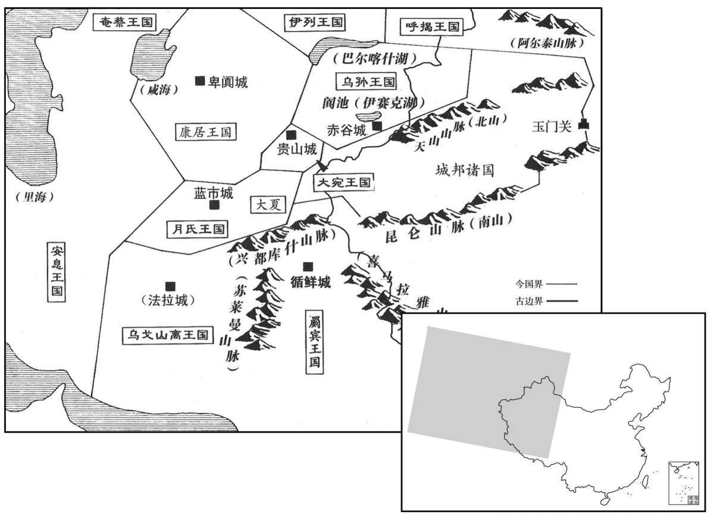
本年形势与背景参考图
初，御史中丞李文，与汤有郄，〔班表，御史大夫有两丞，一曰中丞，在殿中、兰台，掌图籍秘书，外督部刺史，内领侍御史员十五人，受公卿奏事，举劾、按章。成帝绥和元年，更名御史大夫为大司空，置长史，而中丞官职如故。哀帝建平二年，复为御史大夫，元寿二年，又为大司空，而中丞出外为御史台主，历汉东京至魏、晋以下皆然。郄，读曰隙；下同。〕汤所厚吏鲁谒居阴使人上变告文奸事，事下汤治，论杀之。〔上，时掌翻。下，遐嫁翻；下同。〕汤心知谒居为之，上问：“变事踪迹安起？”汤佯惊曰：“此殆文故人怨之。”〔师古曰：殆，近也。〕谒居病，汤亲为之摩足。〔为，于伪翻。〕赵王素怨汤，上书告：“汤大臣，乃与吏摩足，疑与为大奸。”事下廷尉。谒居病死，事连其弟。弟系导官。〔苏林曰：汉仪注：狱二十六所，导官无狱也。师古曰：苏说非也。导，择也。以主择米，故曰导官。时或以诸狱皆满，故权寄此署系之，非本狱所也。班表，导官属少府。〕汤亦治他囚导官，见谒居弟，欲阴为之，而佯不省。〔囚，徐尤翻。为，于伪翻。省，心景翻。〕谒居弟弗知，怨汤，使人上书，告汤与谒居谋共变告李文。事下减宣，〔减宣，人姓名。减，古斩翻。〕宣尝与汤有郄，及得此事，穷竟其事，未奏也。会人有盗发孝文园瘗钱，〔如淳曰：瘗，埋也，埋钱于园陵以送死也。瘗，于计翻。〕丞相青翟朝，与汤约俱谢，〔师古曰：将入朝之时为此要约。朝，直遥翻。〕至前，〔至帝之前也。〕汤独不谢。〔汤以丞相四时行园陵当谢，御史大夫不豫园陵事，故不谢。〕上使御史按丞相，汤欲致其文“丞相见知”，〔欲以见知故纵之罪罪丞相。〕丞相患之。丞相长史朱买臣、王朝、边通，皆故九卿、二千石，〔朱买臣尝为主爵都尉，王朝至右内史，边通至济南相。陈留风俗传：边祖于宋平公子戎字子边。余按左传，周有大夫边伯。〕仕宦绝在汤前。汤数行丞相事，〔数，所角翻。〕知三长史素贵，故陵折，丞史遇之，三长史皆怨恨，欲死之。〔欲以死发汤之奸也。〕乃与丞相谋，使吏捕案贾人田信等，曰：“汤且欲奏请，信辄先知之，居物致富，〔服虔曰：居，谓储也。贾，音古；下同。〕与汤分之。”事辞颇闻，〔师古曰：闻于天子也。〕上问汤曰：“吾所为，贾人辄先知之，益居其物，〔师古曰：益，多也。〕是类有以吾谋告之者。”〔师古曰：类，似也。〕汤不谢，又佯惊曰：“固宜有。”减宣亦奏谒居等事。天子以汤怀诈面欺，〔师古曰：对面欺诬也。〕使赵禹切责汤，汤乃为书谢，因曰：“陷臣者，三长史也。”遂自杀。汤既死，家产直不过五百金。昆弟诸子欲厚葬汤，汤母曰：“汤为天子大臣，被污恶言而死，〔被，皮义翻。污，乌故翻。〕何厚葬乎！”载以牛车，有棺无椁。天子闻之，乃尽按诛三长史。十二月，壬辰，丞相青翟下狱，自杀。
当初，御史中丞李文与张汤不和。张汤所赏识的官吏鲁谒居暗中唆使人上书汉武帝，告发李文有奸恶之事。汉武帝交张汤处理，张汤将李文判罪处死。张汤明知是鲁谒居所为，但当汉武帝问到：“告发的事是从哪里引起的呢？”张汤假装吃惊道：“这大概是李文的故人对他不满而引起的。”后来鲁谒居生病，张汤亲自给他按摩脚。赵王刘彭祖一向怨恨张汤，听说此事后，上书汉武帝告发说：“张汤身为大臣，竟给一个小吏按摩脚，我怀疑他们有大阴谋。”汉武帝将此事交给廷尉处理。鲁谒居病死了，此事又牵连到鲁谒居的弟弟，被囚禁在导官看守所。张汤也因审问别的囚犯到了导官，见到鲁谒居的弟弟，打算暗中救助，表面上却装作不理会。鲁谒居的弟弟不知张汤心意，怨恨张汤，便让人上书朝廷，揭发张汤与鲁谒居同谋告发李文。汉武帝将此事交给减宣处理，减宣与张汤结怨，及至抓住此事，便穷追到底，但一时还没有结案奏报。就在此时，汉文帝陵园中所埋钱币被人盗挖，丞相庄青翟上朝，与张汤约定一同向汉武帝请罪，可到了汉武帝面前，张汤却独自不谢罪。汉武帝命张汤负责审理庄青翟在此事中的责任，张汤企图给庄青翟加上“丞相已知故纵”的罪名，庄青翟非常害怕。丞相长史朱买臣、王朝、边通以前都曾作过九卿或二千石官，做官都比张汤早。张汤曾几次代行丞相职权，知道这三位长史一向尊贵，就故意欺凌折辱他们，将他们看作低级小吏一般，所以三位长史都对张汤心怀怨恨，想置张汤于死地。于是，他们与庄青翟商议，派官吏逮捕审讯商人田崐信等，然后散布说：“张汤向皇上奏请政事，田信每每事先知道，囤积居奇赚了大钱，再分给张汤。”消息传到汉武帝耳中，便问张汤：“我做的事，商人每每事先知道，多屯积货物，好像有人将我的计划告诉了他们。”张汤不谢罪，又作吃惊的样子说：“很可能有这回事。”减宣也将调查鲁谒居一事的结果奏闻。因此，汉武帝认为张汤心怀奸诈且当面欺瞒，派赵禹严厉谴责张汤，张汤只得上书向汉武帝谢罪，并指控：“陷害我的，是三名丞相长史。”然后自杀而死。张汤死后，所留家产价值不过五百金。张汤的兄弟子侄想要厚葬他，其母说：“张汤身为天子重臣，竟被污言秽语中伤而死，何必要厚葬呢！”便将张汤放在牛车上运到墓地，只有一口棺材，并无外椁。汉武帝听说后，就将三名丞相长史全部处死。十二月壬辰（二十五日），丞相庄青翟被逮捕下狱，自杀。
春，起柏梁台。〔服虔曰：用百头梁作台，因名焉。师古曰：三辅旧事云，香柏为之。今书皆作“柏”，服说非也。〕作承露盘，高二十丈，〔高，居号翻。〕大七围，以铜为之；上有仙人掌，以承露，和玉屑饮之，云可以长生。宫室之修，自此日盛。
春季，汉武帝修筑柏梁台，在台上造了一个承露盘，高二十丈，大小要七人合抱，用铜制成。上面装有神仙手掌，用来承接露水，再拌上玉的粉末喝下去，据说可以长生不老。从此，宫室的修建，一天比一天兴盛。
二月，以太子太傅赵周为丞相。
二月，汉武帝任命太子太傅赵周为丞相。
三月，辛亥，以太子太傅石庆为御史大夫。〔卫有大夫石氏。｝
两版字句有差异，建议核对原文。
三月辛亥（十五日），汉武帝任命太子太傅石庆为御史大夫。
大雨雪。〔雨，于具翻。〕
天降大雪。
夏，大水，关东饿死者以千数。
夏季，大水成灾，关东地区饿死的人数以千计。
是岁，孔仅为大农令，而桑弘羊为大农中丞，〔班表：大农有两丞，元狩四年，以东郭咸阳及孔仅为之。今置中丞，其位当在两丞上。〕稍置均输，以通货物。〔时置均输官于郡、国，令远方各以其物而灌输。置平准于京师，都受天下委输，贵则卖之，贱则买之，使富商大贾无所牟利。杜佑曰：汉武帝置均输，谓所当输于官者皆令输其土地所饶，平其所在时价，官更于他处卖之。输者既便，而官有利。〕
这一年，孔仅作了大农令，桑弘羊作了大农中丞，逐渐在郡、国设置均输官，负责调节各地物资，互通有无。
白金稍贱，民不宝用，竟废之。〔铸白金，见上卷元狩四年。〕于是悉禁郡、国无铸钱，专令上林三官铸钱，令天下非三官钱不得行。〔裴骃曰：百官表：水衡都尉，掌上林苑，属官有上林、均输、钟官、辨铜令，然则上林三官其是此三令乎！〕而民之铸钱益少，计其费不能相当，惟真工、大奸乃盗为之。
白金币价值逐渐下降，民间不愿使用，终于废弃。于是，汉武帝下令，各郡、国一律不许铸钱，专由朝廷上林三官负责铸钱，全国各地不是三官钱不得使用。民间私铸钱币的，因为成本太高，无利可图，所以日益减少。计算费用，收支不能相当，只有手艺高强的人或大奸之徒才私自铸钱。
浑邪王既降汉，〔见上卷元狩元年。〕汉兵击逐匈奴于幕北，〔见上卷元狩元年。〕自盐泽以东空无匈奴，西域道可通。于是张骞建言：“乌孙王昆莫本为匈奴臣，后兵稍强，不肯复朝事匈奴，匈奴攻不胜而远之。〔朝，直遥翻。远，于愿翻。〕今单于新困于汉，而故浑邪地空无人，蛮夷俗恋故地，又贪汉财物，今诚以此时厚币赂乌孙，招以益东，居故浑邪之地，〔张骞传：昆莫父难兜靡本与大月氏同在敦煌、祁连间，小国也。大月氏攻杀难兜靡，夺其地。而大月氏又为匈奴所破，西击塞王而夺其国。昆莫报父怨，西攻破大月氏国，因留居为乌孙国。骞欲诱之复归故地。〕与汉结昆弟，其势宜听，听则是断匈奴右臂也。〔断，丁管翻。〕既连乌孙，自其西大夏之属皆可招来而为外臣。”天子以为然，拜骞为中郎将，将三百人，马各二匹，牛羊以万数，赍金币帛直数千巨万；多持节副使，〔师古曰：为骞之副，而各令持节也。〕道可便，遣之他旁国。〔沿道有便可通使他国者即遣之。〕
浑邪五归降汉朝以后，汉军将匈奴势力驱逐到大沙漠以北，自盐泽以东，不见匈奴踪迹，前往西域的道路可以通行。于是张骞建议说：“乌孙王昆莫本来是匈奴的藩属，后来兵力渐强，不肯再事奉匈奴，匈奴派兵征服，未能取胜，于是远去。如今匈奴单于刚刚受到我朝的沉重打击，而过去的浑邪王辖地又空旷无人，蛮夷之族的习俗依恋故地，又贪图我朝的财物，如果现在我们用丰厚的礼物拉拢乌孙，招他们东迁，到过去的浑邪王辖地居住，与我朝结为兄弟之国，他们势将听从我朝的调遣，听从了就等于断了匈奴的右臂一般。与乌孙结盟之后，其西面的大夏等国也都能招来成为我朝的藩属。”汉武帝认为有理，便任命张骞为中郎将，率领三百人，每人马二匹，以及数以万计的牛羊和价值数千万钱的黄金缯帛，又任命多人为手持天子符节的副使，沿途如有通往别国的道路，既派一副使前往。
骞既至乌孙，昆莫见骞，礼节甚倨。骞谕指曰：〔师古曰：以天子意指晓告之。〕“乌孙能东居故地，则汉遣公主为夫人，结为兄弟，共距匈奴，匈奴不足破也。”乌孙自以远汉，未知其大小；素服属匈奴日久，且又近之，〔近，其靳翻。〕其大臣皆畏匈奴，不欲移徙。骞留久之，不能得其要领，〔要，读曰腰。〕因分遣副使使大宛、康居、大月氏、大夏、安息、身毒、于阗及诸旁国。乌孙发译道送骞还，〔宛，于元翻。氏，音支。身毒，音捐笃。阗，徒贤翻，又徒见翻。师古曰：道，读曰导。〕使数十人，马数十匹，随骞报谢，因令窥汉大小。是岁，骞还，到，拜为大行。后岁余，骞所遣使通大夏之属者皆颇与其人俱来，〔晋灼曰：其国人。〕于是西域始通于汉矣。
张骞到达乌孙之后，乌孙王昆莫接见了他，但态度十分傲慢，礼数不周。张骞转达汉武帝的谕旨说：“如果乌孙能够向东返回故土居住，那么我大汉将把公主许配给国王为夫人，两国结为兄弟之邦，共同抗拒匈奴，则匈奴不能不破败。”然而，乌孙自己因距汉朝太远，不知汉朝是大是小，且长期以来一直是匈奴的藩属，与匈奴相距又近，朝中大臣全都畏惧匈奴，不愿东迁。张骞在乌孙呆了很久，一直得不到明确的答复，便向大宛、康居、大月氏、大夏、安息、身毒、于阗及附近各国分别派出副使进行联络。乌孙派翻译、向导送张骞回国，又派数十人、马数十匹随张骞到汉朝报聘答谢，乘机让他们了解汉朝的大小强弱。本年，张骞回到长安，汉武帝任命他为大行。一年多以后，张骞所派出使大夏等国的副使大部分都与该国使臣一同回来，这样，西域各国就开始与汉朝联系往来了。
西域凡三十六国，南北有大山，中央有河，〔西域始通于汉凡三十六国，其后分置五十余国：婼羌、鄯善、且末、小宛、精绝、戎卢、扜弥、渠勒、皮山、乌秅、西夜、蒲犁、子合、依耐、无雷、难兜、罽宾、乌弋山离、犁鞬、条支、安息、大月氏、大夏、康居、奄蔡、大宛、桃槐、休循、捐笃、莎车、疏勒、尉头、乌孙、姑墨、温宿、龟兹、乌垒、渠犁、尉犁、危须、焉耆、乌贪訾离、卑陆、卑陆后国、郁立师、单桓、蒲类、蒲类后国、西且弥东且弥、劫国、山国、狐胡、车师前、后王是也。南北有大山者，南山在于窴之南、东出金城，与汉南山接；北山在车师之北，即唐志所谓西州交河县北柳谷金沙岭等山是也。中央有河者，河有两源，一出葱岭，一出于窴南山，其河北流与葱岭河合，注蒲昌海。自于窴以西，水皆西流，迳休循、罽宾、大月氏、安息等国而入于西海。蒲昌之水潜行地下，南出积石，为中国河。西海之水东南合于交州涨海。〕东西六千余里，南北千余里，东则接汉玉门、阳关，〔班志：敦煌郡龙勒县有玉门关、阳关，酒泉郡有玉门县。阚骃曰：汉罢玉门关屯，置其人于此。括地志：沙州龙勒山，在县南百六十五里，玉门关，在县西北百一十八里。〕西则限以葱岭。〔西河旧事：葱岭，其山高大，上悉生葱，故以名焉。〕河有两源，一出葱岭，一出于窴，〔【章：十四行本“窴”作“阗”；乙十一行本同；孔本同。】〕合流东注盐泽。盐泽去玉门、阳关三百余里。自玉门、阳关出西域有两道：从鄯善傍南山北，循河西行至莎车，为南道；〔鄯善，亦曰楼兰国，治杅尼城，去阳关千六百里。鄯，上扇翻。傍，步浪翻。莎车，治莎车城，去长安九千九百五十里。莎，素河翻。〕南道西逾葱岭，则出大月氏、安息。自车师前王廷随北山循河西行至疏勒，为北道；〔车师前王，治交河城，去长安八千一百五十里，唐西州交河县是也。疏勒，治疏勒城，去长安九千三百五十里，西当大月氏、大宛、康居之道。〕北道西逾葱岭，则出大宛、康居、奄蔡焉。〔杜佑曰：奄蔡，后为肃〔粟〕特国。〕故皆役属匈奴，匈奴西边日逐王，置僮仆都尉，〔匈奴盖以僮仆视西域诸国，故以名官。〕使领西域，常居焉耆、危须、尉黎间，〔焉耆，治员渠城，去长安七千三百里。危须，治危须城，在焉耆东百里，去长安七千二百九十里。尉犁，治尉犁城，去长安六千七百五十里，南接鄯善、且末二国。〕赋税诸国，取富给焉。
西域地区共有三十六个国家，南北为大山，中部有河流，东西长六千余里，南北宽千余里，东部与汉朝的玉门、阳关相连接，西部直到葱岭。中部河流有两个源头，一出于葱岭，一出于于阗，合流后注入盐泽。盐泽离玉门、阳关三百余里。从玉门、阳关前往西域有两条道路：从鄯善沿南山北麓前行，顺着河流向西到莎车，是南道；从南道向西越过葱岭，就到了大月氏、安息。从车师前王廷顺着北山沿河流西行到疏勒，是北道；从北道向西越过葱岭，就到了大宛、康居、奄蔡。以前，西域各国都受匈奴统治。匈奴西部的日逐王设置僮仆都尉统辖西域各国，常驻于焉耆、危须、尉黎一带，向西域各国征收赋税，掠取各国的财富。
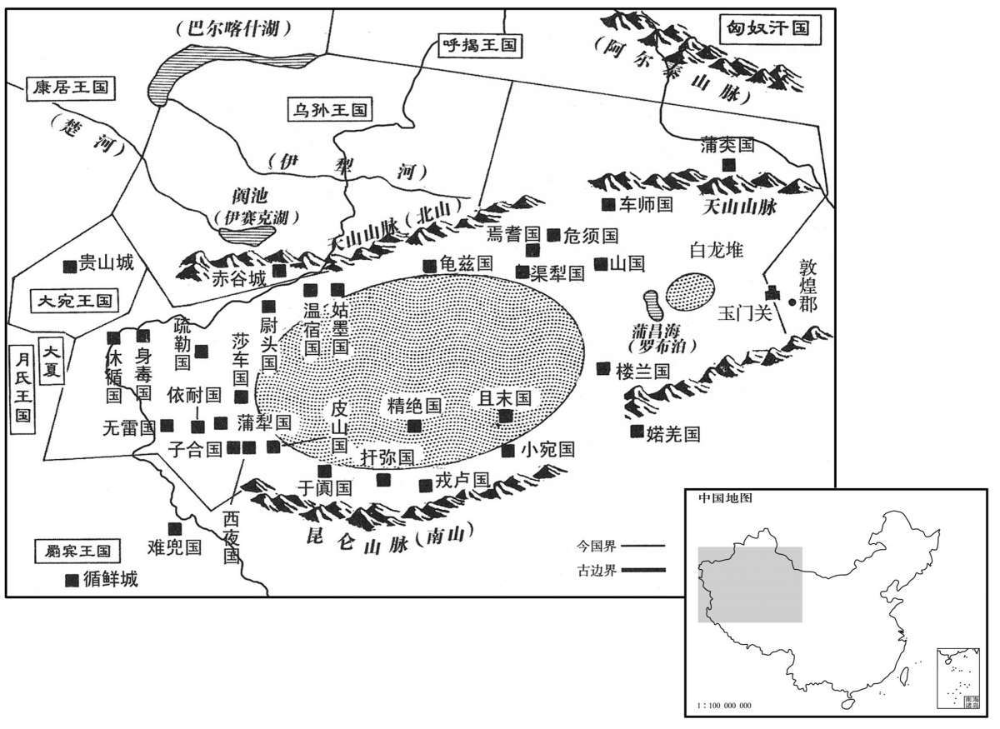
乌孙王既不肯东还，汉乃于浑邪王故地置酒泉郡，〔应劭曰：其水如酒，故曰酒泉。师古曰：城下有金泉，泉味如酒；唐为肃州。宋白曰：东南至长安二千九百里。〕稍发徙民以充实之；后又分置武威郡，〔本匈奴休屠王所居地，太初四年分置武威郡，唐之凉州即其地。宋白曰：东南至长安二千八百里。〕以绝匈奴与羌通之道。
既然乌孙王不肯东还，汉朝便在浑邪王旧辖地区设置酒泉郡，逐渐从内地迁徙百姓来充实这一地区。以后，又从酒泉分出部分地区设置武威郡，用以隔绝匈奴与羌人部落的联络通道。
天子得宛汗血马，爱之，名曰“天马”。使者相望于道以求之。诸使外国，一辈大者数百，少者百余人，人所赍操大放博望侯时，〔赍，资也。操，持也。放，依也。言遗使所将节币大概依遣博望侯时也。放，读曰仿。〕其后益习而衰少焉。〔师古曰：以其串习，故不多发人。少，诗沼翻。〕汉率一岁中使多者十余，少者五六辈；远者八九岁，近者数岁而反。
汉武帝得到大宛出的汗血马，非常喜爱，命名为“天马”，去大宛搜求的使者在路上接连不断。汉朝出使外国的各个使团，大的一行数百人，小的一百多人，所带礼品等物与张骞出使时大致相当，以后随着对西域情况的日益熟悉，使团人员及携带之物也逐渐减少。大约在一年之中，汉朝派往西域各国的使者，多时十余批，少时五六批；其中路远的要八九年，较近的也要数年才能回来。
公元前114年 · 汉世宗孝武皇帝元鼎三年
元鼎三年〔（丁卯、前一一四）〕
冬，徙函谷关于新安。〔据班史，以故关为弘农县。应劭曰：弘农去新安三百里。述征记：新安县，今犹谓之新关。〕
冬季，把函谷关迁到新安。
春，正月，戊子，阳陵园火。
春季，正月戊子（二十七日），汉景帝陵园失火。
夏，四月，雨雹。〔雨，于具翻。〕
夏季，四月，天降冰雹。
关东郡、国十余饥，人相食。
关东地区十几个郡和封国严重饥馑，出现人吃人的惨景。
常山宪王舜薨，〔舜，景帝子，中五年受封。谥法：博闻多能曰宪。〕子勃嗣，坐宪王病不侍疾及居丧无礼废，徙房陵。〔班志，房陵县属汉中郡。宋白曰：阚骃云，即春秋防渚地，汉献帝改“防”为“房”，兼立房陵郡；今为房州。〕后月余，天子更封宪王子平为真定王，〔真定县本属常山。今分真定、绵曼、薡城、肥累四县为王国。〕以常山为郡，于是五岳皆在天子之邦矣。〔华山、嵩高，本在天子之郡。南岳霍山属庐江，淮南、衡山谋反，国除，入汉为郡。元狩元年，济北王献太山及其旁邑。今又以常山为郡，然后皆在天子之邦。〕
常山宪王刘舜去世，其子刘勃承嗣王位。刘勃后被指控在刘舜病重时不侍奉父王，守孝时又违反礼仪规定，被废除王爵，放逐到房陵。一个多月以后，汉武帝改封刘舜的另一个儿子刘平为真定王，将常山改为郡，于是五岳全都归入朝廷直接管辖之内。
徙代王义为清河王。〔义，文帝子代王参之孙，王登之子。清河王乘，孝景之子，薨，无子，国除，徙代王王焉。〕
汉武帝将代王刘义改封为清河王
是岁，匈奴伊稚斜单于死，子乌维单于立。
该年，匈奴单于伊稚斜去世，其子乌维即单于位。
公元前113年 · 汉世宗孝武皇帝元鼎四年
元鼎四年〔（戊辰、前一一三）〕
本年事件索引（现代整理）
冬，十月，上行幸雍，祠五畤。〔雍，于用翻。畤，音止。〕诏曰：“今上帝，朕亲郊，而后土无祀，则礼不答也，〔师古曰：答，对也。郊天而不祀地，失对偶之义。一曰：阙地只之祀，不为神所答应。〕其令有司议！”立后土祠于泽中圜丘。〔郊祀志：有司议祠后土宜于泽中圜丘，为五坛。〕上遂自夏阳东幸汾阴。〔班志，夏阳县属左冯翊。汾阴县属河东郡。〕是时，天子始巡郡、国；河东守不意行至，不办，自杀。〔不意天子行幸至郡，供具不能备也。〕十一月，甲子，立后土祠于汾阴脽上，〔如淳曰：脽者，河之东岸特堆堀，长四五里，广二里余，高十余丈。汾阴县治脽之上；后土祠在县西。汾在脽之北，西流与河合。师古曰：脽者，以其形高起，如人尻脽，故以名云。一说，此临汾水之上，地本名鄈，音与葵同，彼乡人呼葵音如谁，故转而为脽字耳。故汉旧仪曰鄈上。脽，音谁。〕上亲望拜，如上帝礼。礼毕，行幸荥阳，还，至洛阳，〔班志：荥阳、洛阳并属河南郡。〕封周后姬嘉为周子南君。〔臣瓒曰：汲冡古文谓卫将军文子为子南弥牟，其后有子南固、子南劲。纪年，劲朝于魏。后惠成王如卫，命子南为侯。秦并六国，卫最后亡。疑嘉是卫后，故氏子南而称君也。师古曰：子南，其封邑之号，以为周后，故总言周子南君，瓒说非也。例不先言姓而后称君，且自嘉以下皆姓姬，着于史传。余据恩泽侯表，周子南君食邑于颍川长社。〕
冬季，十月，汉武帝巡幸至雍，在五举行祭祀典礼。汉武帝颁布诏书说：“如今敬奉天帝，朕亲自祭祀，却未祭祀地神，于礼不合，着令主管官员研究办理！”主管官员建议，在水泽中圆形丘台上建立后土祠，以祭祀土地神。汉武帝于是自夏阳向东巡幸至汾阴。这是汉武帝第一次出巡各郡、国。河东郡守没想到皇上会突然驾到，一切供应都准备不及，惶恐自杀。十一月甲子（初八），在汾阴丘陵上建立后土祠，汉武帝亲自祭拜，与祭祀天帝之礼相同。祭拜结束后，汉武帝巡幸至荥阳，启程还京，到了洛阳，封周朝王室后裔姬嘉为周子南君。
春，二月，中山靖王胜薨。〔胜，景帝子，中二年受封。〕
春季，二月，中山王刘胜去世。
乐成侯丁义〔义，高祖功臣丁礼之曾孙。班志，乐成，侯国，属南阳郡。考异曰：汉书郊祀志作“乐成侯登”。按史记、汉书功臣表当为“丁义”。〕荐方士栾大，云与文成将军同师。上方悔诛文成，〔诛文成见上卷元狩四年。〕得栾大，大说。〔说，读曰悦。〕大先事胶东康王，〔康王寄，上弟也。〕为人长美言，〔师古曰：善为甘美之言。〕多方略，而敢为大言，处之不疑。〔处，昌吕翻。〕大言曰：“臣常往来海中，见安期、羡门之属，顾以臣为贱，不信臣；又以为康王诸侯耳，不足与方。臣之师曰：『黄金可成而河决可塞，〔塞，悉则翻。〕不死之药可得，仙人可致也。』然臣恐效文成，则方士皆掩口，恶敢言方哉！”〔恶，音乌。〕上曰：“文成食马肝死耳。〔索隐曰：论衡云：气勃而毒盛，故食走马肝，马肝杀人。儒林传：食肉无食马肝，是也。〕子诚能修其方，我何爱乎！”大曰：“臣师非有求人，人者求之。陛下必欲致之，则贵其使者，令为亲属，以客礼待之，乃可使通言于神人。”于是上使验小方，鬬旗，旗自相触击。〔考异曰：封禅书郊祀志皆作“棋”，独史记孝武纪作“旗”。按汉武故事云：“大尝于殿前树旍数百枚，大令旍自相击，翻翻竟庭中，去地十余丈，观者皆骇。”然则作“旗”字者是也。〕是时，上方忧河决而黄金不就，乃拜大为五利将军，又拜为天士将军，地士将军，大通将军。夏，四月，乙巳，封大为乐通侯，〔恩泽侯表：乐通侯食邑于安定郡高平县。〕食邑二千户，赐甲第，僮千人，乘舆斥车马、帷帐、器物以充其家，〔师古曰：斥不用者也。〕又以卫长公主妻之，〔乘，绳证翻。长，知两翻。孟康曰：卫太子妹。如淳曰：卫太子姊也。师古曰：外戚传云：子夫生三女，元朔三年生男。据是，则卫太子之姊也，孟说非。妻，七细翻。〕赍金十万斤，天子亲如五利之第，使者存问共给，〔共，读曰供。〕相属于道。〔属，之欲翻。〕自太主、将、相以下，〔太主，帝姑窦太主也。〕皆置酒其家，献遗之。〔遗，于季翻。〕天子又刻玉印曰“天道将军”，〔据前史，下文言为天子道天神，则道读曰导。〕使使衣羽衣，夜立白茅上；五利将军亦衣羽衣，立白茅上，受印，以示不臣。〔羽衣，缉羽毛为衣也；今道士服被之。使衣、亦衣，于既翻。〕大见数月，佩六印，〔五利。天士、地士、大通、天道五将军，并乐通侯为六印。〕贵震天下。于是海上燕、齐之间，莫不搤腕自言有禁方，能神仙矣。〔搤，音厄。腕，乌贯翻。〕
乐成侯丁义向汉武帝推荐方士栾大，说栾大与文成将军少翁同出一个师门。汉武帝正后悔不该杀死少翁，所以见到栾大后非常高兴。栾大原来侍奉胶东康王刘寄，善于说好听的话，富于智谋，敢说大话，从不犹疑。栾大对汉武帝说：“我常常往来于大海之中，见过安期生、羡门等神仙，只因认为我地位微贱，所以他们不信任我；又认为康王不过是一位诸侯，没有资格得到长生不老的秘方。我师父说：‘黄金可以炼成，黄河决口可以堵塞，长生不老之药可以得到，神仙可以招致。’但我怕步少翁的后尘，如果那样，则所有的方士都将捂着嘴不敢说话，谁还敢谈长生不老之方呢！”汉武帝说道：“少翁不过吃 了马肝而死的。你要真能得到长生不老之方，我会吝惜什么呢！”栾大说：“我老师对别人无所求，都是别人求他。陛下如一定要将他请来，就应尊崇他的使者，让他的使者成为陛下的亲近的下属，以待客的礼节对待，这样才能让他将陛下的请求转达给神仙。”于是汉武帝让栾大试验小法术。栾大让旗帜相斗，旗帜果然相互撞击。此时，汉武帝正在忧虑黄河决口和黄金无法炼成，便封栾崐大为五利将军，后又封其为天士将军、地士将军、大通将军。夏季，四月，乙巳（二十一日），汉武帝封栾大为乐通侯，食邑二千户，赐给上等府第以及僮仆一千人，并把自己用不着的车马、帷帐、器物等赏给栾大以充家用，又将亲生女儿卫长公主嫁给栾大为妻，送黄金十万斤。汉武帝还亲自到栾大家中看望，派去询问栾大家中供应情况的使者在路上络绎不绝。汉武帝姑妈窦太主、丞相、将军及以下的人，都到栾大家中设摆酒宴，赠送礼品。汉武帝又刻了一枚“天道将军”的玉印，命使者身穿用羽毛织成的衣服，于夜晚站在白茅上面；栾大也身穿羽衣，站在白茅上面接受玉印，表示他不是汉武帝的臣属。栾大自见到汉武帝后，数月之中，佩带六枚印信，其显贵使天下为之震动。于是，沿海一带燕、齐等地的人们无不振奋地握住手腕，自称有长生不老的秘方、能通神仙。
六月，汾阴巫锦〔应劭曰：锦，巫名。〕得大鼎于魏脽后土营旁，〔师古曰：汾脽本魏地之坟，故曰魏脽也。营，谓后土祠之兆域。〕河东太守以闻。天子使验问，巫得鼎无奸诈，乃以礼祠，迎鼎至甘泉，从上行，〔如淳曰：以鼎从行上甘泉。〕荐之宗庙及上帝，藏于甘泉宫；群臣皆上寿贺。
六月，汾阴一位名叫锦的巫师，在魏后土祠旁边得到一个大鼎，河东太守将此事奏报朝廷。汉武帝派人核查，证实巫师得鼎并无欺诈，便以礼祭祀，将此鼎迎接到甘泉宫。皇上带着鼎同行，呈献给宗庙和皇天上帝，保存在甘泉宫中。文武百官都向汉武帝祝贺。
秋，立常山宪王子商为泗水王。〔泗水统凌、泗阳、于三县，本属东海郡，帝分为王国。〕
秋季，汉武帝封常山宪王的儿子刘商为泗水王。
初，条侯周亚夫为丞相，〔周亚夫，景帝前七年为相，中三年罢。〕赵禹为丞相史，府中皆称其廉平，然亚夫弗任，曰：“极知禹无害，〔汉书音义曰：文无所枉害。萧何以文无害为沛主吏掾。章怀太子贤曰：按律有无害都吏，如今言公平吏。苏林曰：无害，若言无比也。一曰：害，胜也，无能胜害之者。师古曰：伤害也，无人能伤害之者。贡父曰：持法者或以私意陷人，谓之害；故贵于文无害。无害者，取其为人无害于行，则可以为吏矣。〕然文深，不可以居大府。”〔应劭曰：禹持文法深劾。〕及禹为少府，比九卿为酷急；〔言以当时九卿同列者比之，禹为酷急也。〕至晚节，吏务为严峻，而禹更名宽平。
当初，条侯周亚夫作丞相时，赵禹为丞相史，相府中人都称道赵禹的廉洁公平，可是周亚夫不重用他，周亚夫说：“我非常了解赵禹的公平，但他执法严苛，不可以在丞相府掌权。”及至赵禹作了少府，执法比其他九卿都严苛峻急。到赵禹晚年，其他官员都以严刑峻法为务，赵禹却一改名声，号称宽厚平和。
中尉尹齐素以敢斩伐着名，〔姓谱：少昊之子封于尹城，子孙因以为氏。按尹氏，周之世卿。〕及为中尉，吏民益雕敝。是岁，齐坐不胜任抵罪。〔胜，音升。〕上乃复以王温舒为中尉，赵禹为廷尉。后四年，禹以老，贬为燕相。
中尉尹齐平素以敢于杀人闻名于世，及至他作了中尉，官吏和百姓越发凋敝。这一年，尹齐因被指控不能胜任其职而获罪。汉武帝又任命王温舒为中尉，越禹为廷尉。四年后，赵禹因年纪太老，被贬为燕国丞相。
是时吏治皆以惨刻相尚，〔治，直吏翻。〕独左内史儿宽，劝农业，缓刑罚，理狱讼，务在得人心；择用仁厚士，推情与下，不求名声，吏民大信爱之；收租税时，裁阔狭，与民相假贷，〔师古曰：谓有贫弱及农要之时，不即征收也。余谓阔，谓征敛稍宽、禁防疏阔之时；狭，谓督促迫急之时。阔时不急征收，假贷与民，使营生业。〕以故租多不入。后有军发，左内史以负租课殿，当免；〔殿，丁练翻。课下下曰殿。〕民闻当免，皆恐失之，大家牛车、小家担负输租，襁属不绝，〔师古曰：襁，索也。言输者接连不绝于道，若绳索之相属也，犹今言续索矣。属，之欲翻。〕课更以最。〔课上上曰最。〕上由此愈奇宽。
这一时期，用法严酷成为整个官场的风尚，只有左内史宽，鼓励农业生产，放宽刑罚，处理诉讼纠纷，争取人心。他选择心地忠厚的人加以任用，与下级推心置腹，不求名声，受到官吏和百姓的衰心爱戴。征收赋税时，调节缓急，借给百姓钱物，因此租税常常收不上来。后来国家有重大军事行动，宽因税收不足，政绩最差，应该免职。当地老百姓听说宽会被罢免，都唯恐失去这样一位好官，于是富室大家用牛车，究家小户用担挑，络绎不绝地将租税送到官府，宽征税的成绩一跃成为最好，汉武帝也因此对宽越发另眼相看。
初，南越文王遣其子婴齐入宿卫，〔南越王胡薨，谥文王。婴齐入宿卫，见十七卷建元元年。〕在长安取邯郸樛氏女，〔取，读曰娶。邯郸属赵国。师古曰：樛，居虬翻。〕生子兴。文王薨，婴齐立，乃藏其先武帝玺，〔赵佗自号南越武帝。李奇曰：去其僭号。〕上书请立樛氏女为后，兴为嗣。汉数使使者风谕婴齐入朝。〔数，所角翻。师古曰：风，读曰讽，讽谕令入朝。〕婴齐尚乐擅杀生自恣，惧入见要，用汉法比内诸侯，〔乐，音洛。见，贤遍翻；下同。要，读曰邀。恐汉邀之以用朝廷之法，如内诸侯王。〕固称病，遂不入见。婴齐薨，谥曰明王。太子兴代立，其母为太后。
当初，南越王赵胡派其子赵婴齐入宫为汉武帝充当侍卫，婴齐在长安娶邯郸女子氏为妻，生一子，取名赵兴。赵胡死后，赵婴齐断承王位，隐藏其先祖南越武帝赵佗的印玺，上书朝廷，请求立氏女为王后，赵兴为世子。朝廷多次派遣使臣，提醒赵婴齐入京朝觐。赵婴齐愿自操生杀予夺大权，随心所欲，害怕一旦入朝，朝廷会用法令像约束内地诸侯一样约束他，所以坚决崐称病，没有到长安朝见。赵婴齐死后，谥号称明王。太子赵兴即王位，其母氏为王太后。
太后自未为婴齐姬时，尝与霸陵人安国少季通。〔师古曰：姓安国，字少季。少，诗照翻。〕是岁，上使安国少季往谕王、王太后以入朝，比内诸侯，令辩士谏大夫终军等宣其辞，〔百官表：元狩五年，初置谏大夫，秩八百石。〕勇士魏臣等辅其决，〔师古曰：助令决策也。〕卫尉路博德将兵屯桂阳〔班志，桂阳县属桂阳郡；唐为连州桂阳、连山二县地。〕待使者。南越王年少，太后中国人；安国少季往，复与私通，国人颇知之，多不附太后。太后恐乱起，亦欲倚汉威，数劝王及群臣求内属；〔数，所角翻。〕即因使者上书，请比内诸侯，三岁一朝，〔朝，直遥翻。〕除边关。于是天子许之，赐其丞相吕嘉银印及内史、中尉、太傅印，余得自置；除其故黥、劓刑，用汉法，比内诸侯。使者皆留，填抚之。〔汉制，诸侯王国二千石以上皆汉朝所命，余得自置。今赐南越丞相、内史、中尉、太傅印，使之比内诸侯也。汉自文帝除肉刑，不用黥、劓之法，故亦令南越除之。劓，鱼器翻，又牛例翻。填，读曰镇。为吕嘉反张本。〕
氏在没有成为赵婴齐的姬妾之前，曾与霸陵人安国少季有私情。这年，汉武帝派安国少季至南越国，告谕赵兴和他的母亲入京朝觐，同于内地诸侯；又派能言善辩的谏大夫终军等宣告朝廷的谕旨，勇士魏臣等帮助他们做决定；并命卫尉路博德率兵屯驻桂阳等待使臣。由于南越王年纪还小，王太后氏又是汉朝人，安国少季到南越国后，又与氏私通，国中之人颇有耳闻，所以多数人都不拥护氏。氏害怕发生变乱，也想倚靠朝廷的威势，多次劝赵兴和南越国群臣请求归属朝廷，于是便借这次朝廷使臣前来的机会，上书请求比照内地诸侯，每三年朝觐一次，解除边界关卡。于是汉武帝批准所请，赐南越国丞相吕嘉银质印信，内史、中尉、太傅等也都由朝廷赐给印信，其他官职允许南越王自行安排。废除南越国原有的脸上刺字和割鼻子的刑罚，使用汉朝法律，比照内地诸侯。所派使臣全部留在南越国，对该地区进行镇压和安抚。
上行幸雍，〔雍，于用翻。〕且郊，或曰：“五帝，泰一之佐也。宜立泰一，而上亲郊。”上疑未定。齐人公孙卿曰：“今年得宝鼎，其冬辛巳朔旦冬至，与黄帝时等。”卿有札书〔师古曰：等，同也。札，木简之薄小者也。〕曰：“黄帝得宝鼎，是岁己酉朔旦冬至，凡三百八十年，黄帝仙登于天。”因嬖人奏之。〔嬖，卑义翻，又博计翻。〕上大悦，召问，卿对曰：“受此书申公，申公曰：『汉兴复当黄帝之时，汉之圣者在高祖之孙且曾孙也。宝鼎出而与神通，黄帝接万灵明庭，明庭者甘泉也。黄帝采首山铜，〔班志，河东蒲县有首山。〕铸鼎于荆山下，〔班志：冯翊怀德县有荆山。〕鼎既成，有龙垂胡髯下迎黄帝，〔师古曰：胡，谓颔下垂肉也；髯，其毛也。髯，人占翻。〕黄帝上骑龙，与群臣后宫七十余人俱登天。』于是天子曰：“嗟乎！诚得如黄帝，吾视去妻子如脱屣耳！”〔师古曰：屣，小履也。脱屣者，言其便易，无所顾也。屣，山尔翻。〕拜卿为郎，使东候神于太室。〔师古曰：太室山在颍川崇高县，是为中岳。〕
汉武帝巡幸至雍，将要举行祭天仪式，有人建议说：“五帝为泰一神的助手，应建泰一庙，由皇上亲自祭祀。”汉武帝迟疑未决。齐国人公孙卿说道：“今年得到宝鼎，冬季十一月初一清晨为冬至，与黄帝时一样。”公孙卿有简牍，上面说：“黄帝得到宝鼎，该年十一月初一清晨为冬至，总共过了三百八十年，黄帝成仙升天。”公孙卿将简牍上的话通过汉武帝宠幸的人奏上，汉武帝非常高兴，召公孙卿前来询问，公孙卿回答说：“此书是申公给我的，申公说：‘汉朝兴盛还会与黄帝时一样，汉朝的圣人，是高祖皇帝的孙子至曾孙。宝鼎的出现，正好与神意相通，黄帝在祭祀神灵的“明庭”迎接万种神灵，“明庭”就是甘泉宫。黄帝在首山开采铜矿，在荆山下铸造宝鼎。宝鼎铸成之后，天上有一条龙将龙须垂下来接引黄帝，于是，黄帝骑上龙背，和群臣及后宫妃嫔七十余人一起登天成了神仙。’”于是汉武帝说：“唉！要真的能跟黄帝一样，我看待离开妻子儿女，就象抛弃拖鞋罢了！”于是任命公孙卿为郎官，派他到东方，在太室山等候天神降临。
公元前112年 · 汉世宗孝武皇帝元鼎五年
元鼎五年〔（己巳、前一一二）〕
本年事件索引（现代整理）
冬，十月，上祠五畤于雍，遂逾陇，〔陇坻也，在天水郡陇县。三秦记曰：其九曲，上陇者七日乃越。〕西登崆峒。〔唐地理志：崆峒在岷州溢乐县西。岷州，汉临洮之地。史记作“空桐”。正义曰：空桐山，在原州平高县西百里。〕陇西守以行往卒，〔卒，读曰猝。〕天子从官不得食，惶恐，自杀。〔从，才用翻。〕于是上北出萧关，从数万骑猎新秦中，以勒边兵而归。新秦中或千里无亭徼，于是诛北地太守以下。〔唐麟州治新秦。杜佑：汉新秦中地。余谓唐取汉新秦中之名以名郡耳，麟州不能尽有汉新秦中之地也。北地与朔方接境，时朔方新置郡，盖使北地并力以营筑亭徼也。徼，吉吊翻。〕上又幸甘泉，立泰一祠坛，所用祠具如雍一畤而有加焉。〔雍有五畤，今祠太一所用，如雍一畤之祠具也。有加者，加醴枣脯之属。〕五帝坛环居其下四方地，为醊食群神从者及北斗云。〔说文：醊，祭酎也。师古曰：谓联属而祭也。醊，竹芮翻。食，读曰飤。从，才用翻。〕十一月，辛巳朔，冬至；昧爽，〔昧，冥也。爽，明也。谓日尚昧昧而天色渐明也。〕天子始郊拜泰一，朝朝日，夕夕月则揖。〔应劭曰：天子春朝日，秋夕月；朝日以朝，夕月以夕。臣瓒曰：汉仪注：郊泰畤，皇帝平旦出竹宫，东向揖日，其夕西南向揖月，便用郊日，不用春、秋也。师古曰：春朝朝日，秋暮夕月，盖常礼；郊泰畤而揖日月，此又别仪。朝朝，下直遥翻；下同。〕其祠，列火满坛，坛旁亨炊具。〔亨，读曰烹。〕有司云：“祠上有光。”又云：“昼有黄气上属天。”〔属，之欲翻。〕太史令谈、祠官宽舒等〔班表：太史令属太常。刘昭志：秩六百石，掌天时星历，凡国祭祀、丧娶之事。谈，即司马谈也。祠官，掌祠祀之官。宽舒，史逸其姓。〕请三岁天子一郊见，〔见，贤遍翻。〕诏从之。
冬季，十月，汉武帝在雍祭祀五，然后越过陇坻，西行登上崆峒山。陇西郡守因汉武帝来得突然，无法供应皇上随从官员的饭食，感到惶恐，自杀而死。于是汉武帝北出萧关，率数万骑兵至新秦中行猎，以整饬边疆军队，然后回京。汉武帝见新秦中一带有的地区千里之中竟没有设置亭障，便将北地崐太守及以下有关官员处死。汉武帝再次驾临甘泉，并在此修建泰一祭坛，所用祭祀器具仿照雍地五中一所用而有所增添。又建五帝祭坛环绕于泰一祭坛下方四周，祭祀群神的随从和北斗星。十一月辛巳朔（初一），冬至，黎明，汉武帝就开始祭拜泰一天神。早晨面对东方，向太阳作揖致敬；晚上面对西南，向月亮作揖致敬。祭祀时，烈火满坛，坛旁放置烹制祭品的饮具。主管官员宣称：“祭坛上空有光。”又宣称：“白天有一股黄气升到空中。”太史令司马谈、祭祀官宽舒等建议，天子每三年祭天一次，汉武帝下诏表示同意。
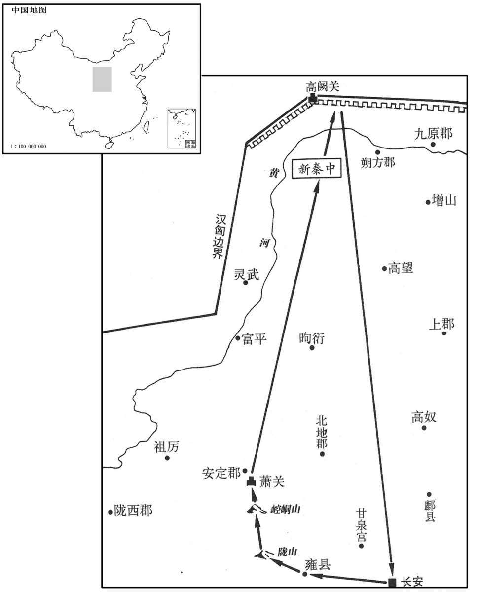
南越王、王太后饬治行装，重赍〔治，直之翻。赍，读曰资。〕为入朝具。其相吕嘉，年长矣，相三王，宗族仕宦为长吏者七十余人，男尽尚王女，女尽嫁王子弟、宗室，及苍梧秦王有连，〔孟康曰：苍梧，越中王，自名为秦王。连，亲婚也。晋灼曰：秦王，即后赵光；赵本与秦同姓，故曰秦王。余据南越王姓赵，曷为不称南越秦王！晋说未为通。长，知两翻。〕其居国中甚重，得众心愈于王。〔师古曰：愈，胜也。〕王之上书，数谏止王，王弗听；有畔心，数称病，不见汉使者。〔数，所角翻。〕使者皆注意嘉，势未能诛。王、王太后亦恐嘉等先事发，〔先，悉荐翻。〕欲介汉使者权，谋诛嘉等，〔韦昭曰：恃使者为介胄也。索隐曰：志林云：介者，因也；欲因使者权诛吕嘉也。韦昭以介为恃。介者，间也；以言间恃汉使之权，意即得矣；然云恃为介胄则非也。虞喜以介为因，亦有所由；介者，宾主所因也。〕乃置酒请使者，大臣皆侍坐饮。〔坐，徂卧翻。〕嘉弟为将，将卒居宫外。〔将，即亮翻。〕酒行，太后谓嘉曰：“南越内属，国之利也；而相君苦不便者，何也？”以激怒使者。使者狐疑相杖，〔杖，直亮翻。〕遂莫敢发。嘉见耳目非是，〔师古曰：言异于常也。〕即起而出。太后怒，欲鏦嘉以矛，〔鏦，楚江翻。〕王止太后。嘉遂出，介其弟兵就舍，〔李奇曰：介，被也。师古曰：介，甲也，被甲以自卫也。弟兵，即上所云弟将卒居外者。〕称病，不肯见王及使者，阴与大臣谋作乱。王素无意诛嘉，嘉知之，以故数月不发。
南越王赵兴、王太后氏置办行装和重礼，准备入京朝觐。南越国丞相吕嘉年事已高，历任三代国王的丞相，其家族成员在南越国担任重要官职的有七十余人，男子都娶了国王的女儿，女子都嫁给国王的子弟或王族成员，与苍梧秦王也有姻亲关系。吕嘉在南越国的地位十分重要，比南越王更得人心。南越王上书汉朝请求归附，吕嘉曾多次谏阴，但南越王不听，吕嘉便生出离叛之心，几次推说有病，不肯与汉使相见。汉使对吕嘉都很注意，但因其势力强大，未能铲除。南越王和王太后也害怕吕嘉先行发难，想利用汉使的权力杀死吕嘉等人，于是设摆酒宴，款待汉使，大臣都来陪坐饮酒。吕嘉的弟弟为南越国大将，率兵在宫外警戒。敬酒时，王太后对吕嘉说：“南越国内附汉朝，于国家有利，而丞相你嫌这样做不便，为什么呢？”想以此来激怒汉使。汉使犹豫不决，相互观望，于是谁也没敢发动。吕嘉见气氛不对，马上起身退席。王太后大怒，想用矛刺死吕嘉，被南越王阻止。吕嘉便离开王宫，在其弟士兵簇拥下回到相府。他从此推说有病，不肯见南越王和汉使。暗中与大臣密谋造反。南越王一向无意杀吕嘉，吕嘉知道这一点，所以拖延数月，未曾发动。
天子闻嘉不听命，王、王太后孤弱不能制，使者怯无决；又以为王、王太后已附汉，独吕嘉为乱，不足以兴兵，欲使庄参以二千人往使。〔往使，疏吏翻。〕参曰：“以好往，数人足矣；以武往，二千人无足以为也。”辞不可，天子罢参。郏壮士故济北相韩千秋〔班志，郏县属颍川郡。史记正义曰：今汝州郏城县。郏，音夹。千秋，盖相济北成王胡也。胡，贞王勃之子。〕奋曰：“以区区之越，又有王、王太后应，独相吕嘉为害，愿得勇士三百人，必斩嘉以报。”于是天子遣千秋与王太后弟樛乐将二千人往。入越境。〔樛，居虬翻。〕吕嘉等乃遂反，下令国中曰：“王年少。太后，中国人也，又与使者乱，专欲内属，尽持先王宝器入献天子以自媚；多从人行，至长安，虏卖以为僮仆；取自脱一时之利，无顾赵氏社稷、为万世虑计之意。”乃与其弟将卒攻杀王、王太后及汉使者，遣人告苍梧秦王及其诸郡县，立明王长男越妻子术阳侯建德为王。〔建德降汉，始封术阳侯，史盖追书也。班表：术阳侯食邑于东海之下邳。长，知两翻。〕而韩千秋兵入，破数小邑。其后越开直道给食，〔师古曰：纵之令深入，然后击灭之，〕未至番禺四十里，〔番禺，南越都。番，音潘。〕越以兵击千秋等，遂灭之；使人函封汉使者节置塞上，好为谩辞谢罪，〔师古曰：谩，诳也，音慢，又莫连翻。〕发兵守要害处。
汉武帝听说吕嘉不肯听命，而南越王、王太后又势孤力弱，不能控制，所派使臣怯懦无决断；又认为既然南越王、王太后已肯于归附，只有吕嘉从中捣乱，用不着举兵，想派庄参率兵二千前往南越国。庄参奏道：“要是以友好的目的前往，几个人就够了；如果是以武力去胁迫，二千人是不够用的。”推辞说不能去，汉武帝将庄参免职。郏县壮士、曾任济北国承相的韩千秋自告奋勇说：“一个小小的南越国，又有其国王和王太后的响应，只丞相吕嘉一人捣乱，给我三百勇士，必能斩杀吕嘉回报。”于是汉武帝派韩千秋和南越王太后的弟弟乐率兵二千前往。汉军进入南越国境，吕嘉等便反叛，号令全国说：“国王年轻；王太后本是汉朝人，又与汉使淫乱，一心想归附汉朝，将先王的宝器全都献给汉天子来讨好；还想带去大批随从之人，到达长安后卖为奴隶，只顾自己眼前利益，却不顾赵氏的江山社稷，没有为子孙万代着想的意思。”吕嘉与其弟率兵攻杀了南越王赵兴、王太后氏及汉朝使臣，派人告知苍梧秦王及各郡县，立南越明王赵婴齐大儿子赵越的南越妻子所生的儿子术阳侯赵建德为王。韩千秋率兵进入南越国后，攻破了几座小城。后南越人开辟直道，提供饭食，在距其都城番禺约四十里的地方将韩千秋所部汉军歼灭，然后派人把汉使的符节用函封好，放到边塞上，以动听的诳骗言辞谢罪，同时派兵加强边界要隘的镇守。
春，三月，壬午，天子闻南越反，曰：“韩千秋虽无功，亦军锋之冠，〔冠，古玩翻。〕封其子延年为成安侯；〔班表，成安侯食邑于颍川郡之郏县。〕樛乐姊为王太后，首愿属汉，封其子广德为龙亢侯。”〔班志，龙亢县属沛国。亢，音刚。考异曰：汉书功臣表作“龙侯”，南越传作“龒侯”。晋灼曰：“龒”，古“龙”字。史记建元以来侯者表及南越传皆作“龙亢侯”，今从之。〕
春李，三月，壬午（初四），汉武帝听说南越国造反，说道：“韩千秋虽然没能建功，但也是军队里最勇敢的先锋。”封其子韩延年为成安侯；乐的姐姐是南越王太后，首先表示愿意归附汉朝，封乐的儿子广德为龙亢侯。
夏，四月，赦天下。
两版字句有差异，建议核对原文。
夏季，四月，大赦天下。
丁丑晦，日有食之。
丁丑晦（三十日），出现日食。
秋，遣伏波将军路博德〔环济要略曰：伏波将军者，船涉江海，欲使波涛伏息也。〕出桂阳，下湟水；〔水经：汇水出桂阳县卢聚，南出贞女峡，合洭水，东南过含洭县，南出洭浦关为桂水。山海经以洭水为湟水。徐广曰：湟水，一名洭水，出桂阳，通四会。师古曰：湟，音皇。〕楼船将军仆出豫章，下浈水；〔应劭曰：浈水出南海龙川西，入秦水。水经：浈水迳桂阳郡之浈阳县南，而右注溱水。浈，郑氏曰：浈，音柽；孟康曰：浈，音贞；师古曰：浈，丈庚翻。〕归义越侯严为戈船将军，出零陵，下离水；〔张晏曰：严故越人，降，为归义侯。越人于水中负人船，又有蛟龙之害，故置戈于船下，因以为名。臣瓒曰：伍子胥书有戈船，以载干戈，因谓之戈船也。师古曰：以楼船之例言之，非谓载干戈也，此盖船下安戈以御蛟鼍水虫之害，张说近之。贡父曰：船下安戈既难措置，又不可以行；今造舟船甚多，未尝有置戈者。颜北人，不晓行船，故信张说；盖瓒说是。余据表无归义越侯严。零陵本属桂阳，帝分置郡；唐为永、道二州。漓水，班志：出零陵县阳海山东南，至广信入郁水。〕甲为下濑将军，下苍梧；〔服虔曰：甲故越人归汉者。臣瓒曰：濑，湍也；吴、越谓之濑，中国谓之碛。伍子胥书有下濑船。濑，音赖。苍梧本越地，帝始置郡，有漓水关；唐梧、贺、康、端、封之地。〕皆将罪人，江、淮以南楼船十万人。越驰义侯遗别将巴、蜀罪人，发夜郎兵，下牂柯江，咸会番禺。
秋季，汉武帝派伏波将军路博德从桂阳沿湟水进发；楼船将军杨仆自豫章沿浈水进发；南越降将名叫严的归义侯被任命为戈船将军，率兵从零陵沿离水进发；名为甲的南越降将被任命为下濑将军，率兵进攻苍梧。各路军卒都由囚犯组成，并调集江、淮以南地区水军十万人。南越降将名叫遗的驰义侯也率领巴、蜀地区的囚犯，又征调夜郎国军队，沿柯江南下，与各路部队在番禺会师。
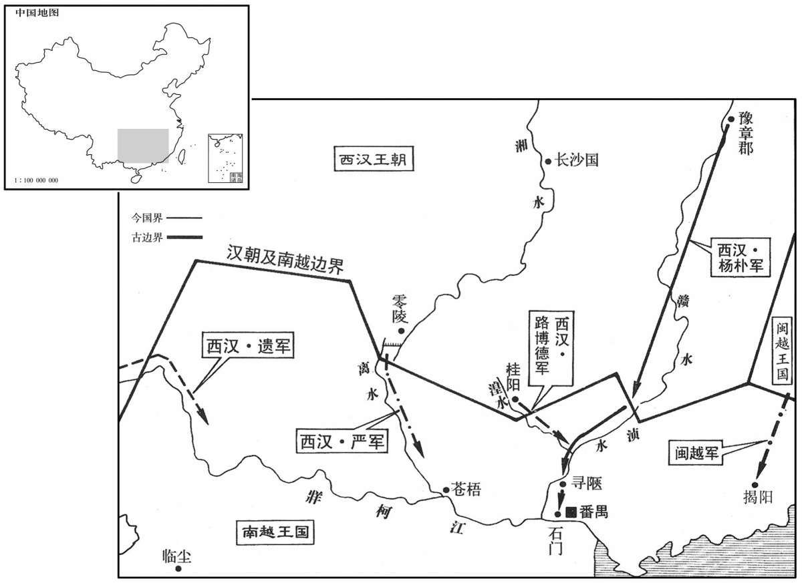
齐相卜式上书，请父子与齐习船者往死南越。天子下诏褒美式，赐爵关内侯，金六十斤，田十顷，布告天下；天下莫应。是时列侯以百数，皆莫求从军击越。会九月尝酎，祭宗庙，列侯以令献金助祭。少府省金，金有轻及色恶者，上皆令劾以不敬，夺爵者百六人。〔如淳曰：汉仪注：王子为侯，岁以黄金尝酎于汉庙，皇帝临受献金，金少，不如斤两，色恶，王削县，侯免国。余据当时失侯者列侯、王子侯共一百六人，盖不特王子侯有酎金也。酎，直又翻。省，悉景翻。劾，户概翻。〕辛巳，丞相赵周坐知列侯酎金轻，下狱，自杀。〔下，遐嫁翻。〕
齐国丞相卜式上书朝廷，请求汉武帝批准他父子和齐国熟习舰船的人前往南越效死。为此，汉武帝颁布诏书，表扬卜式，封卜式为关内侯，赏金六十斤、土地十顷，并宣告全国，然而全国却无人响应。当时列侯数以百计，没有一个人要求从军打南越。正好举行酎祭活动，天下列侯奉命进献黄金助祭。少府检查所献黄金，凡重量不足或成色不好的，皇上命令一律以“不敬”罪加以参劾。结果，因此而被革去爵位的，有一百零六人。辛巳（初六），丞相赵周也被指控“明知列侯所献黄金重量不足，却纵容包庇”，被逮捕下狱，赵周自杀。
丙申，以御史大夫石庆为丞相，封牧丘侯。〔恩泽侯表，牧丘侯食邑平原。〕时国家多事，桑弘羊等致利，王温舒之属峻法，而儿宽等推文学，皆为九卿，更进用事；〔更，工衡翻。〕事不关决于丞相，丞相庆醇谨而已。〔师古曰：醇，专厚也。〕
丙申（二十一日），汉武帝任命御史大夫石庆为丞相，封牧丘侯。当时，国家多事，桑弘羊等人谋取财利，王温舒等人推行严刑峻法，而宽等人则大力推崇儒家经典，他们都位列九卿，相继掌握朝政大权，国家大事不向丞相汇报，也不由丞相决定，丞相石庆只是敦厚、谨慎而已。
五利将军装治行，东入海求其师。既而不敢入海，之太山祠。上使人随验，实无所见。五利妄言见其师，其方尽多不售，〔师古曰：售，应当也；不售者，无验也。〕坐诬罔，腰斩；乐成侯亦弃市。
五利将军栾大整装出发，东行入海寻找他的神仙老师。可后来没敢入海，而到太山去祭祀。汉武帝派人跟踪核查，确实未见神仙踪影，栾大回来后却妄称见到了他的老师。栾大的方术已经用尽，多不灵验，汉武帝便以“诈骗欺罔”之罪将栾大判处腰斩。推荐栾大的乐成侯丁义也被当众斩首。
西羌众十万人反，与匈奴通使，〔使，疏吏翻。〕攻故安，围枹罕。〔故安县属涿郡，西羌之兵安能至此！当作“安故”。班志，安故、枹罕二县，皆属陇西郡。枹罕，故罕羌邑。宋白曰：安故故城，在兰州南。枹罕，今河州治所。枹，音肤。罕，如字。〕匈奴入五原，〔五原，即秦九原郡，帝更名；唐为盐州。宋白曰：五原郡有原五所，故名，谓龙游原、乞地于原、青岭原、岢岚真原、横槽原也。五原故城，在今榆林县界。〕杀太守。〔守，式又翻；下同。〕
西羌部族十万人反叛朝廷，与匈奴互通使者，进攻故安，包围罕。匈奴侵入五原，杀死五原太守。
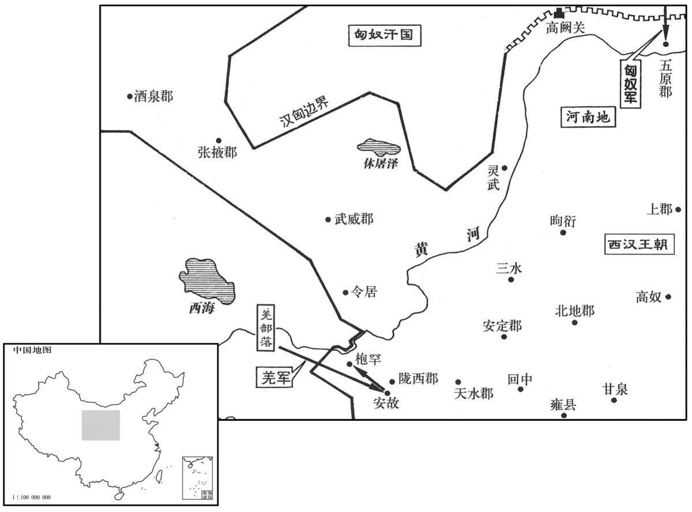
公元前111年 · 汉世宗孝武皇帝元鼎六年
元鼎六年〔（庚午、前一一一）〕
上传原文的注释括号有异常，字符原样保留；无法可靠划分的段落默认全文显示。
本年事件索引（现代整理）
冬，发卒十万人，遣将军李息、郎中令徐自为征西羌，平之。
冬季，发兵十万人，派将军李息、郎中令徐自为征讨西羌，平定了西羌部族的叛乱。
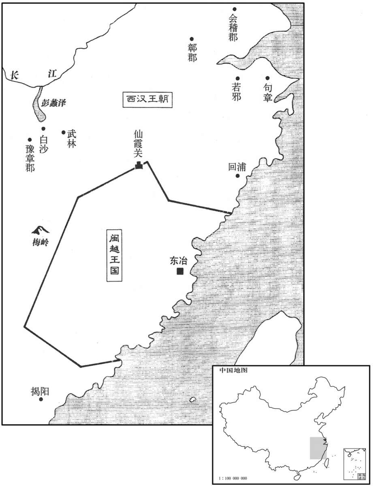
本年形势与背景参考图
楼船将军杨仆入越地，先陷寻陿，〔陿，作陕音。姚氏曰：寻陿在始兴西三百里，近口也。陿，音狭。〕破石门，〔石门在番禺西北二十里。郡国志：吕嘉拒汉，积石江中为门，因名石门。〕挫越锋，以数万人待伏波将军路博德至俱进，楼船居前，至番禺。南越王建德、相吕嘉城守。楼船居东南面，伏波居西北面。会暮，楼船攻败越人，纵火烧城。〔败，蒲卖翻。〕伏波为营，〔师古曰：设营垒以待降者。〕遣使者招降者，赐印绶，复纵令相招。〔师古曰：来降者即赐以侯印，而放令还，更相招谕。复，扶又翻。〕楼船力攻烧敌，驱而入伏波营中。黎旦，城中皆降。建德、嘉已夜亡入海，伏波遣人追之。校尉司马苏弘得建德，越郎都稽得嘉。〔孟康曰：越中所自置郎也。考异曰：史记汉书表皆作“孙都”，南越传皆云“都稽”，今从传。〕戈船、下濑将军兵及驰义侯所发夜郎兵未下，南越已平矣。遂以其地为南海、苍梧、郁林、合浦、交趾、九真、日南、珠厓、儋耳九郡。〔南海，唐广州、循州之地。苍梧，注见上。郁林，唐桂州、郁林、党、绣州之地。合浦，唐廉、雷、潘州之地。交趾，唐安南之地。杜佑曰：南方夷人，其足大，指开广；若并足而立，其指交，故名交趾。刘欣期交州记曰：交趾之人出南定县，足骨无节，身有毛，卧者更扶乃得起。山海经：交胫国为人交胫。郭璞曰：脚胫曲戾相交，所谓“雕题、交趾”也。九真，唐爱州之地。日南，唐驩州之地。师古曰：言其在日之南，所谓开北户以向日者。珠厓、儋耳，唐琼管之地。应劭曰：二郡在大海厓岸之边，出真珠，故曰珠厓。儋耳者，种大耳，其渠率自谓王者，耳尤缓，下肩三寸。张晏曰：异物志，二郡在海中，东西千里，南北五百里。儋耳之人，镂其颊皮，上连耳匡，分为数支，状如羊肠，累耳而下垂。贤曰：儋耳故城，即今儋州义伦县。儋，丁甘翻。臣瓒曰：珠厓郡治瞫都，去长安七千三百二十四里，儋耳去长安七千三百三十五里，见茂陵书。〕师还，上益封伏波；封楼船为将梁侯，苏弘为海常侯，都稽为临蔡侯，〔徐广曰：海常在东莱。余以王子侯表参考，则海常侯当食邑琅邪。功臣表，临蔡侯食邑河内。〕及越降将苍梧王赵光等四人皆为侯。〔赵光封随桃侯，史定封安道侯，毕取封膫侯，居翁封湘城侯。考异曰：凡此等封侯者，年表皆有月日，为其先后难齐，故尽附于立功之处；后仿此。〕
楼船将军杨仆率兵进入南越国，首先攻陷寻，击破石门，挫败南越军的前锋，然后率部下数万人等待伏波将军路博德到来一同前进。杨仆为前导，到达南越国都番禺。南越王赵建德、丞相吕嘉等据城垣坚守。杨仆屯兵城东南面，路博德屯兵城西北面。黄昏时，杨仆军攻破南越军，放火烧城。路博德则设下营垒，派人招揽投降官兵，赏给印信、绶带，再命他们去招降同伴。杨仆军猛烈进攻，火烧敌军，南越军被驱赶到路博德营中。黎明时，城中南越人全部投降。赵建德、吕嘉已于半夜逃到海上，路博德派人追击。校尉司马苏弘生擒赵建德，原南越国郎官都稽活捉吕嘉。戈船将军、下濑将军的部队及驰义侯率领的夜郎军尚未赶到，南越国已被剿平。汉朝于是在南越旧地设位南海、苍梧、郁林、合浦、交趾、九真、日南、珠崖、儋耳九郡。大军返回后，汉武帝加封路博德食邑，封杨仆为将梁侯，苏弘为海常侯，都稽为临蔡侯；南越降将原苍梧王赵光等四人也都被封为列侯。
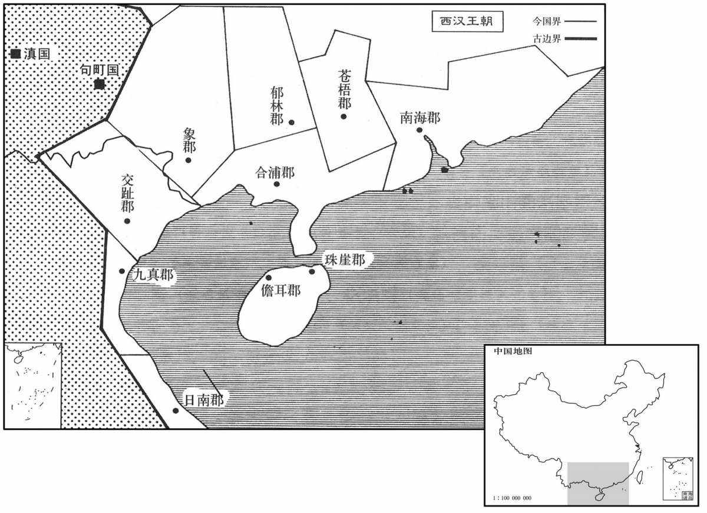
公孙卿候神河南，言见仙人迹缑氏城上。〔班志，缑氏县属河南郡。宋白曰：汉缑氏县故城，在今县东南二十五里。缑，工侯翻。〕春，天子亲幸缑氏城视迹，问卿：“得毋效文成、五利乎？”卿曰：“仙者非有求人主，人主者求之；其道非宽假，神不来。言神事如迂诞，〔师古曰：迂，回远也。诞，大言也。〕积以岁月，乃可致也。”上信之。于是郡、国各除道，缮治宫观、名山、神祠以望幸焉。〔观，古玩翻。〕
公孙卿在河南等候神仙降临，声称在缑氏城上看到了神仙脚印。春季，汉武帝亲自来到缑氏城观看神仙脚印，问公孙卿说：“你不是想效法少翁、栾大吧？”公孙卿说：“神仙无求于人间君主，而人间君主有求于他，如果求神之道不宽裕，神仙就不会来。说到神仙之事，似乎很遥远荒诞，但积够了岁月，神仙就可请到。”汉武帝相信了他的话。于是，各郡、国都扩建道路，修缮宫观和名山的神祠，希望有神仙驾临。
赛南越，祠泰一、后土，始用乐舞。〔据郊祀志，五年秋，为伐南越告祷太一，故今赛祠。赛，先代翻。〕
为感谢神仙保佑征服南越，祭祀泰一神和后土神，并开始使用以音乐伴奏的舞蹈。
驰义侯发南夷兵，欲以击南越。且兰君恐远行〔且兰亦南夷种，帝开为县，属牂柯郡。且，音苴；子闾翻。〕旁国虏其老弱，乃与其众反，杀使者及犍为太守。〔犍，渠延翻。守，式又翻。〕汉乃发巴、蜀罪人当严：“当”改“尝”。】〕击南越者八校尉，遣中郎将郭昌、卫广将而击之，〔将，即亮翻。〕诛且兰及邛君、莋侯，〔邛君，邛都之君。莋侯，莋都之君。莋，才各翻；下同。〕遂平南夷为牂〔【章：十四行本“牂”作“”，乙十一行本同。】〕柯郡。夜郎侯始倚南越，南越已灭，夜郎遂入朝，〔朝，宜遥翻。〕上以为夜郎王。冉駹皆振恐，请臣置吏，乃以邛都为越巂郡，〔邛，渠容翻。越巂郡，唐为巂州。巂，音髓。〕莋都为沈黎郡，〔服虔曰：今蜀郡北部都尉所治本莋都。臣瓒曰：茂陵书，沈黎治莋都，去长安三千三百三十五里。唐为黎州地。〕冉駹为汶山郡，〔駹，莫江翻。应劭曰：今蜀郡岷山本冉駹地。宣帝地节四年，省岷山郡并蜀，今茂州诸羌之地是也。华阳国志：汶山，南接汉嘉，西接凉州酒泉，北接阴平，皆其地也。唐置茂州汶山县。注云，有岷山。类篇：汶，音“岷”。又据史记夏纪引禹贡“岷、嶓既艺”及“岷山之阳”及“岷山导江”之岷皆作“汶”，盖汉时古字通用也。康曰汶，音问，非也。〕广汉西白马为武都郡。〔高祖置广汉郡；唐为梓州。白马居武都仇池，班志所谓天池大泽。括地志：陇右成州、武州皆白马氐，其豪族杨氏居成州仇池山上。武都郡，唐阶、成、武等州地。〕
驰义侯征调南夷各部族的军队，想让他们去征讨南越国时，且兰族首领害怕率军远离后相邻部族会乘机掳掠本族的老弱，于是率领部众背叛汉朝，杀死汉朝使臣和犍为太守。汉潮便征调应去攻打南越的由巴、蜀罪犯组成的八校尉部队，派中郎将郭昌、卫广率领他们攻击南越，诛杀且兰及邛都、都等部族首领，平定了南夷叛乱，并设置柯郡。夜郎国原本依赖南越国，南越国灭亡后，夜郎国君便到长安朝见，汉武帝封夜郎国君为夜郎王。冉等部族都非常害怕，纷纷请求臣属于汉朝，由朝廷设官管理。于是，汉朝在邛都设越郡，在都设沈黎郡，在冉设汶山郡，在广汉西部的白马设武都郡。
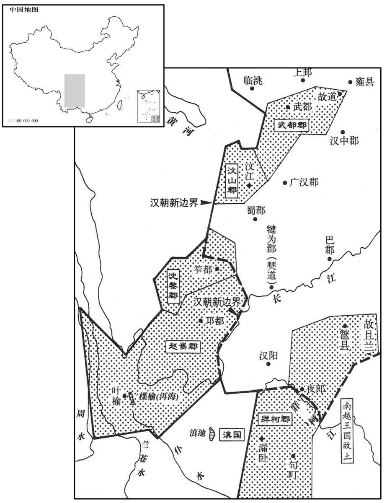
初，东越王余善上书，请以卒八千人从楼船击吕嘉；兵至揭阳，〔班志，揭阳县属南海郡；唐为潮州。韦昭曰：揭，其逝翻。苏林音揭，师古音竭。〕以海风波为解，不行，持两端，阴使南越。〔使，疏吏翻。〕及汉破番禺，不至。杨仆上书愿便引兵击东越；上以士卒劳倦，不许，令诸校屯豫章、梅岭以待命。〔徐广曰：梅岭在会稽界。索隐曰：徐说非也。按今豫章三十里有梅岭，在洪崖山，当古驿道。杜佑曰：梅岭在虔州虔化县界。括地志：在虔化县东北一百二十八里。校，户教翻。〕余善闻楼船请诛之，汉兵临境，乃遂反，发兵距汉道，号将军驺力等为吞汉将军，入白沙、武林、梅岭，〔索隐曰：按今豫章北二百里接番阳界，地名白沙，沙东南八十里有武阳亭，东南三十里地名武林，当闽、越之京道。刘昫曰：武林，在苍梧猛陵县界，隋分猛陵置武林县，属永平郡，唐置龚州。〕杀汉三校尉。是时，汉使大农张成、故山州侯齿将屯〔齿，城阳共王子，坐酎金失侯，故书曰故侯。将，即亮翻；下仆将同。〕弗敢击，却就便处，皆坐畏懦诛，余善自称武帝。
当初，东越王馀善上书朝廷，请求率兵八千随楼船将军杨仆征讨吕嘉。但军队抵达揭阳后，又以海上风狂浪大为借口，停止前进，抱着向两头观望的态度，暗中派使者与南越国联络。及至汉军攻破南越国都番禺，东越军还未到达。杨仆上书朝廷，请求乘胜征讨东越，汉武帝因士卒疲劳，没有批准，令各路将领屯兵豫章、梅岭一带等待命令。馀善听说杨仆奏请诛讨东越，又见汉军屯兵边境，于是造反，派兵到汉军通道上进行抵抗，赐将军驺力等“吞汉将军”称号，率兵进入白沙、武林、梅岭地区，杀死汉军三名校尉。当时，汉潮派大农令张成、原山州侯刘齿率兵屯驻当地，他们不敢出击，反退到安全之处，所以都被以怯懦畏敌的罪名处死。馀善自称武帝。
上欲复使杨仆将，为其伐前劳，〔为，于伪翻。〕以书敕责之曰：“将军之功独有先破石门、寻陿，非有斩将搴旗之实也，〔师古曰：搴，拔取之也。〕乌足以骄人哉！前破番禺，捕降者以为虏，〔降，户江翻。〕掘死人以为获，是一过也。使建德、吕嘉得以东越为援，〔师古曰：以仆不穷追之，故令得以东越为援也。〕是二过也。士卒暴露连岁，将军不念其勤劳，而请乘传行塞，〔传，张恋翻。行，下孟翻。〕因用归家，怀银、黄，垂三组，夸乡里，是三过也。〔师古曰：银，银印也；黄，金印也。仆为主爵都尉，又为楼船将军，并将梁侯，故为三组。组，印绶也。〕失期内顾，〔师古曰：言顾思妻妾也。〕以道恶为解，是四过也。问君蜀刀价而阳不知，〔蜀刀，蜀中所作刀。师古曰：蜀刀，有环者也。〕挟伪干君，〔师古曰：干，犯也。〕是五过也。受诏不至兰池，〔兰池宫在渭城。如淳曰：本出军时欲使之兰池宫，顿而不至。〕明日又不对；假令将军之吏，问之不对，令之不从，其罪何如？推此心在外，江海之间可得信乎？今东越深入，将军能率众以掩过不？”〔不，读曰否。〕仆惶恐对曰：“愿尽死赎罪！”上乃遣横海将军韩说出句章，〔班志，句章县属会稽郡。史记正义曰：句章故城，在越州鄮县西一百里。〕浮海从东方往；楼船将军杨仆出武林，中尉王温舒出梅岭，以越侯为戈船、下濑将军，出若邪、白沙，〔若邪，时属会稽山阴县界；今之若邪溪，在越州东南二十五里，曰五云溪。〕以击东越。
汉武帝想再派杨仆率兵征东越，因杨仆自恃先前的功劳而骄傲，下诏书责备他说：“你的功劳只是先攻破石门、寻而已，实际上并没有斩将夺旗，有什么值得骄傲的呢！先前攻破番禺城，你捕捉归降的人当俘虏，把死人挖出来冒充是战场斩杀，是一错。使赵建德、吕嘉得到东越的外援，是二错。将士们连年暴露于蛮荒之地，你不念及他们的辛劳，却请求乘坐驿车巡行边塞，乘机回家，怀揣金、银印信，垂下三条绶带，向乡里夸耀，是三错。你眷恋妻妾，误了回营日期，却以道路不好走作借口，是四错。问你蜀郡的刀价，你假装不知道，以欺诈手段冒犯君主，是五错。你接受诏书而不去兰池宫，第二天也不加以解释。如果你的部下，问他话不回答，命令他也不服从，该当何罪？在外怀有这种心肠，天下还有谁会相信你呢？如今东越军队已深入我国边境，你是否能率领部队补救你的过失呢？”杨仆惶恐地表示：“我愿拚死效力以赎罪！”于是，汉武帝派横海将军韩说从句章出发，渡海从东面进击；楼船将军杨仆从武林出发，中尉王温舒从梅岭出发，派已封侯的南越降将为戈船将军、下濑将军，从若邪、白沙出发，进攻东越。
博望侯既以通西域尊贵，其吏士争上书言外国奇怪利害求使。天子为其绝远，非人所乐往，听其言，〔师古曰：凡人皆不乐去，故有自请为使者即听而遣之。为，于伪翻。乐，音洛。使，疏吏翻；下同。〕予节，募吏民，毋问所从来，〔师古曰：不为限禁远近，虽家人私隶并许应募。予，读曰与。〕为具备人众遣之，〔为，于伪翻；下同。〕以广其道。来还，不能毋侵盗币物及使失指，〔师古曰：乖天子指意。〕天子为其习之，辄覆按致重罪，以激怒令赎，〔师古曰：言其串习，不以为难，必当更求充使，令立功以赎罪。〕复求使，使端无穷，而轻犯法。〔复，扶又翻。使，疏吏翻；下同。〕其吏卒亦辄复盛推外国所有，言大者予节，言小者为副，〔予，读曰与。〕故妄言无行之徒皆争效之。〔行，下孟翻。〕其使皆贫人子，私县官赍物，〔师古曰：言所赍官物，窃自用之，同于私物。〕欲贱市以私其利。〔师古曰：所市之物得利多，故不尽入官也。〕外国亦厌汉使，人人有言轻重，〔服虔曰：汉使言于外国，人人轻重不实。〕度汉兵远不能至，而禁其食物以苦汉使。〔师古曰：令其困苦也。度，徒洛翻。〕汉使乏绝，积怨至相攻击。而楼兰、车师，小国当空道，〔汉出西域有两道，南道从楼兰，北道从车师，故二国当汉使空道。师古曰：空，即孔也。〕攻劫汉使王恢等尤甚，而匈奴奇兵又时遮击之。使者争言西域皆有城邑，兵弱易击。〔易，以豉翻。〕于是天子遣浮沮将军公孙贺将万五千骑出九原二千余里，至浮沮井而还；〔浮沮，匈奴中井名。出军时，期贺至浮沮井，故以为将军之号。下匈河将军，其义类此。沮，子余翻。〕匈河将军赵破奴将万余骑出令居数千里，至匈河水而还；〔臣瓒曰：匈奴河水，去令居千里。〕以斥逐匈奴，不使遮汉使，皆不见匈奴一人。乃分武威、酒泉地置张掖、敦煌郡，〔应劭曰：敦，大也。煌，盛也。张掖，张国臂掖也。敦，音屯。张掖，昆邪王所居地，唐为甘州。敦煌，唐为沙州。考异曰：汉书武纪：“元狩二年，浑邪王降，以其地为武威、酒泉郡。元鼎六年，分置张掖、敦煌郡。”而地理志云：“张掖、酒泉郡，太初元年开；武威郡，太初四年开；敦煌郡，后元元年分酒泉置。”今从武纪。〕徙民以实之。
博望侯张骞因出使西域而获得尊贵的地位之后，他的部下争相上书朝廷，陈说外国的奇异之事和利害关系，要求出使。汉武帝因西域道路极为遥远，一般人不愿前往，所以听从所请，赐给符节，准许招募官吏百姓，不问出身，为他们治装配备人员后派出，以扩大出使的道路。这些人返回时，不可避免地会出现偷盗礼品财物或违背朝廷旨意的现象。汉武帝因他们熟习出使之事，所以治以重罪，以激怒他们，让他们立功赎罪，再次请求出使。这些人反复出使外国，而对犯法之事看得很轻。使臣的随从官吏和士卒也每每盛赞外国事物，会说的被赐予正使符节，不大会说的就封为副使。因此，很多浮夸而无品行的人都争相效法。这些出使外国的人都是贫家子弟，他们将所带的国家财物据为私有，打算贱卖后私吞利益。西域各国也厌恶每个汉使所说之事轻重不一，估计汉朝军队路远难至，就拒绝为汉使提供食物，给他们制造困难。汉使在缺崐乏粮食供应的情况下，常常积怨，甚至和各国相互攻击。楼兰、车师两个小国，地处汉朝通往西域的通道上，攻击汉使。王恢等尤其厉害，匈奴军队也时常阻拦袭击汉使。使臣们争相报告朝廷，说西域各国都有城镇，兵力单弱，容易攻击。于是，汉武帝派浮沮将军公孙驾率骑兵一万五千人从九原出塞二千余里，至浮沮井而还，又派匈河将军赵破奴率骑兵一万余人从令居出塞数千里，至匈河水而还，目的是为了驱逐匈奴，让汉使不受阻拦，但没有遇到一个匈奴人。于是分割武威、酒泉二郡土地，增设张掖、敦煌二郡，迁徙内地民众充实该地。
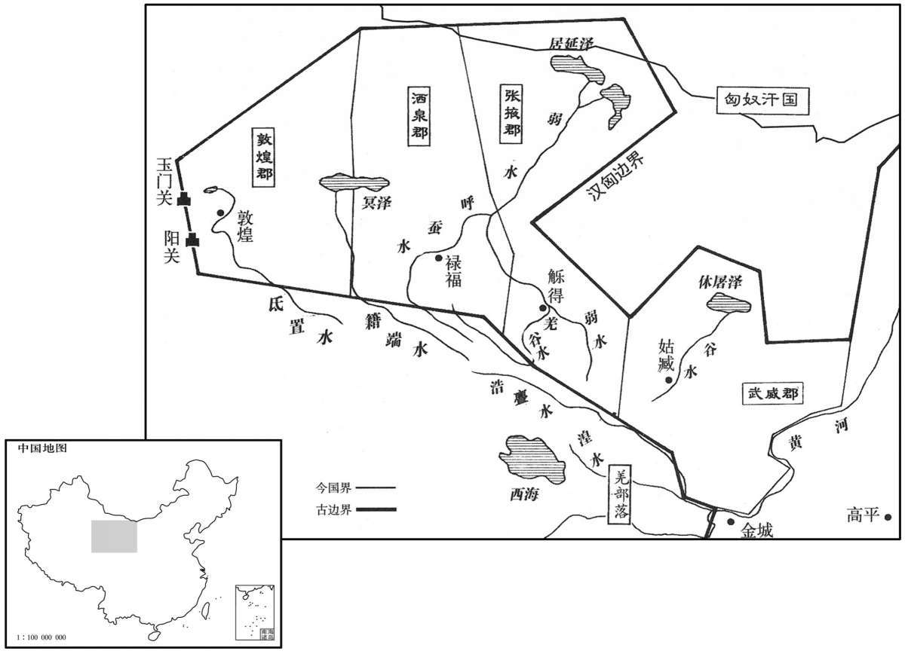
是岁，齐相卜式为御史大夫。式既在位，乃言“郡、国多不便县官作盐铁器，苦恶〔如淳曰：“苦”或作“盬”，盬，不攻严也。臣瓒曰：谓作铁器民患苦其不好也。师古曰：二说非也。盐既味苦，器又脆恶，故总云苦恶也。余谓盐器，则官与牢盆是也；铁器，则官铸铁器是也。苦恶，专指盐铁器而言，如说未可厚非。〕价贵，或强令民买之；而船有算，〔船算及盐铁器，并见上卷四年，强，其两翻。〕商者少，物贵。”〔少，诗沼翻。〕上由是不悦卜式。
该年，齐相卜式升任御史大夫。卜式到任后，言道：“各郡、国对盐铁由官府专营多感不便，官府专营的盐铁产品质次价高，有时还强迫百姓购买，船只也要交纳算赋，所以经商的人少，物价昂贵。”汉武帝因此不再喜欢卜式。
初，司马相如病且死，有遗书，颂功德，言符瑞，劝上封泰山。上感其言，会得宝鼎，上乃与公卿诸生议封禅。封禅用希旷绝，莫知其仪，而诸方士又言：“封禅者合不死之名也。〔汉书作“古不死之名”。〕黄帝以上，封禅皆致怪物，与神通，秦皇帝不得上封。陛下必欲上，稍上即无风雨，遂上封矣。”〔上，时掌翻。师古曰：稍，渐也。〕上于是乃令诸儒采尚书、周官、王制之文，草封禅仪，数年不成。上以问左内史儿宽，宽曰：“封泰山，禅梁父，昭姓考瑞，帝王之盛节也；〔父，音甫。〕然享荐之义，不着于经。〔师古曰：封禅之享荐也，以非常礼，故经无其文。着，竹翻。〕臣以为封禅告成，合祛于天地神只，〔李奇曰：祛，开散；合，闭也；开闭于天地也。祛，丘居翻。〕唯圣主所由，制定其当，〔师古曰：当，犹中也。〕非群臣之所能列。今将举大事，优游数年，使群臣得人人自尽，〔师古曰：所言不同，各有执见也。〕终莫能成。唯天子建中和之极，兼总条贯，金声而玉振之，〔师古曰：言振扬德音，如金玉之声也。〕以顺成天庆，垂万世之基。”上乃自制仪，颇采儒术以文之。上为封禅祠器，以示群儒，或曰“不与古同”，于是尽罢诸儒不用。上又以古者先振兵释旅，然后封禅。
当初，司马相如病重将死，临终时留下遗书，称颂汉武帝的功德，并谈及祥瑞之事，劝汉武帝到泰山封禅祭祀天地。汉武帝深受感动，适逢获得宝鼎，他便与公卿大臣和儒生们商议封禅之事。天子封禅泰山，是极为少见的事，又久未兴行，没有人懂得它的礼仪。方士们认为：“封禅的意义就是不死。黄帝以前的君主，封禅都招来怪物，以与神灵相通，而秦始皇就未能在泰山顶上祭天。陛下如一定要登泰山。应缓缓前进，如无风雨，就可以登上泰山山顶举行祭天大典了。”于是，汉武帝命儒生们采用《尚书》、《周官》、《王制》等书的记载，草拟封禅的礼仪。但数年之后，还未拟出。汉武帝询问左内史宽的意见，宽说：“在泰山祭天，在梁父山祭地，显扬祖先的姓氏，考求上天的瑞应，是帝王的盛典，但献礼的仪式，经书中却无记载。我认为，封禅典礼的完成，意味着同天地神灵的联系，只有圣明的君主才能制定适当的礼仪，而非臣下所能拟就。如今将要举行大典，已经拖了数年时间，使群臣人人各自尽了全力，却始终未能拟出。只有天子才能掌握中正平和的最高原则，综合条理各种头绪，发出金玉般的声音，以顺利促成这一天下最大的庆典，作为万世遵奉的法则。”于是汉武帝自定礼仪，多采用儒家学说加以修饰。又制作封禅用的祭器，拿给儒生们观看，有的儒生说：“与古代的不一样。”于是汉武帝将儒生一律罢斥不用。又按着古代的作法，首先振奋军威，用酒食飨众，然后举行封禅大典。
公元前110年 · 汉世宗孝武皇帝元封元年
元封元年〔（辛未、前一一〇）〔应劭曰：始封泰山，故改元。〕
上传原文的注释括号有异常，字符原样保留；无法可靠划分的段落默认全文显示。
本年事件索引（现代整理）
冬，十月，下诏曰：“南越、东瓯，咸伏其辜；西蛮、北夷，颇未辑睦；〔师古曰：辑，与集同。集，和也。〕朕将巡边垂，躬秉武节，置十二部将军，亲帅师焉。”〔帅，读曰率。〕乃行，自云阳〔班志，云阳县属左冯翊。〕北历上郡、西河、五原，〔元朔四年置西河郡，其地自汾、石州西北至塞下。〕出长城，北登单于台，〔杜佑曰：单于台在云州云中县西北百余里。〕至朔方，临北河；〔【章：十四行本“河”下有“勒兵十八万骑，旌旗径千余里，以见武节，威匈奴”十九字；乙十一行本同；张校同。】〕遣使者郭吉告单于曰：“南越王头已县于汉北阙。〔县，古悬通。〕今单于能战，天子自将待边；〔将，即亮翻。〕不能，即南面而臣于汉，何徒远走亡匿于幕北，寒苦无水草之地，毋为也！”语卒而单于大怒，〔卒，子恤翻。〕立斩主客见者，〔师古曰：主客，主接诸客者也。见者，谓引见郭吉于单于者。〕而留郭吉，迁之北海上，然匈奴亦詟，〔詟，之涉翻。师古曰：失气也。〕终不敢出。上乃还，祭黄帝冢桥山，〔应劭曰：桥山在上郡阳周县。〕释兵须如。〔须如，地名。考异曰：汉书作“凉如”，今从史记。〕上曰：“吾闻黄帝不死，今有冢，何也？”公孙卿曰：“黄帝已仙上天，群臣思慕，葬其衣冠。”〔考异曰：史记、汉书皆云“或对”；汉武故事云“公孙卿对”，今取之。〕上叹曰：“吾后升天，群臣亦当葬吾衣冠于东陵乎？”〔东陵，谓茂陵也。在长安东，故曰东陵。〕乃还甘泉，类祠太一。〔师古曰：类祠，谓以事类而祭也。〕
冬季，十月，汉武帝颁布诏书说：“南越、东瓯都已受到应有的惩罚，而西蛮、北夷尚未平服和睦。朕将巡视边疆，亲自主持武道，设置十二路将军，由我统率。”于是汉武帝离京出巡，自云阳向北，经上郡、西河、五原，出长城，再向北登单于台，直至朔方，来到北河，派使臣郭吉通知匈奴单于说：“南越国王的人头已经悬挂到大汉皇宫的北门阙上。如今单于若是能战，天子亲自率军在边境等候；若是不能战，就应归降大汉，为什么偏要远远地逃避到大沙漠以北，寒冷、困苦而又缺乏水草的地方呢？实在是没意思！”话音一落，单于大怒，立即将引见郭吉的官员斩首，同时扣留郭吉，将他迁徙到北海之畔。但此时匈奴也已丧失斗志，始终未敢出战。于是，汉武帝起驾回朝，在桥山祭黄帝陵，行至须如，将征调的兵卒遣散。汉武帝问道：“我听说黄帝长生不老，可如今有他的陵墓，这是为什么呢？”公孙卿回答说：“黄帝成仙升天以后，群臣相念于他，所以建陵将他的衣冠埋葬。”汉武帝叹道：“我将来升天后，群臣也会把我的衣冠葬在东陵吗？”回到甘泉宫，祭祀太一神。
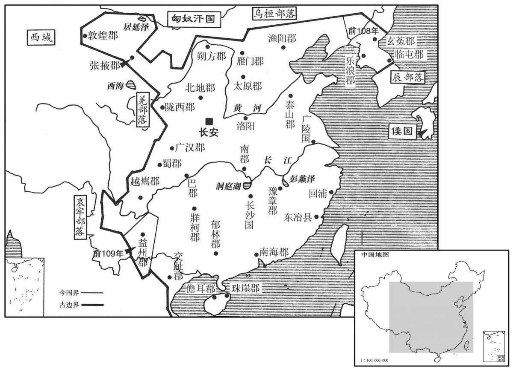
本年形势与背景参考图
上以卜式不习文章，贬秩为太子太传，以儿宽代为御史大夫。
汉武帝因卜式不善文辞，将其降为太子太傅，命宽代替卜式作御史大夫。
汉兵入东越境，东越素发兵距险，使徇北将军守武林。楼船将军卒钱塘辕终古斩徇北将军。〔班志，钱唐县属会稽郡。师古曰：辕，姓；终古，名。〕故越衍侯吴阳以其邑七百人反攻越军于汉阳。越建成侯敖与繇王居股杀余善，以其众降。〔据东越传，吴阳先在汉，汉使归喻余善，余善不听。及汉军至，阳以邑人攻越。书“故越衍侯”者，言其旧为越衍侯也。越衍侯及建成侯皆东越所封。〕上封终古为御儿侯，〔孟康曰：御儿，越中地，今吴南亭是也。国语曰：吾用御儿临之。宋祁注云：御儿，越北鄙，今嘉兴。史记正义曰：“御”，今作“语”。语儿乡在苏州嘉兴县南七十里，临官道。〕阳为卯石侯，居股为东成侯，敖为开陵侯；又封横海将军说为按道侯，横海校尉福为缭嫈侯，东越降将多军为无锡侯。〔“卯石侯”，功臣表作“外石”，食邑于济南。“东成”作“东城”，属九江郡。开陵，侯国，属临淮郡。“按道”，功臣表作“安道”，食邑于南阳。索隐曰：缭嫈，县名。师古曰：缭，音辽。嫈，于耕翻。横海校尉福，城阳共王子海常侯福也，坐法失侯，以今功封缭嫈侯。服虔曰：嫈，音莹。刘伯庄曰：纡营翻。无锡县，属会稽郡。〕上以闽地险阻，数反复，〔数，所角翻。〕终为后世患，乃诏诸将悉其民徙于江、淮之间，遂虚其地。〔虚，如字，康读曰墟。〕
汉军进入东越国境，东越王早已派兵占据了险要地带，并命徇北将军镇守武林。杨仆部下士兵钱塘人辕终古将徇北将军斩杀。原东越衍侯吴阳率当地武装七百人背叛东越王，在汉阳进攻东越军队。名叫敖的东越建成侯与繇王骆居股杀死东越王骆馀善，率众归降。汉武帝封辕终古为御侯，吴阳为卯石侯，骆居股为东成侯，敖为开陵侯；又封横海将军韩说为按道侯，横海校尉福为缭侯，东越降将多军为无锡侯。汉武帝因闽越地区地势险恶，其人反覆无常，多次与汉朝为敌，终究是后世祸患，于是诏命各路将领将当地人全部迁到长江、淮河一带，于是闽越地区成为荒无人烟的地方。
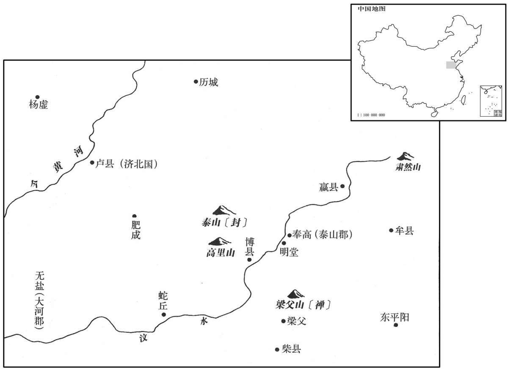
春，正月，上行幸缑氏，〔考异曰：封禅书、郊祀志作“三月”；汉书武纪及荀纪皆作“正月”，今从之。〕礼祭中岳太室，从官在山下闻若有言“万岁”者三。〔荀悦曰：万岁，神称之也。从，才用翻。〕诏祠官加增太室祠，禁无伐其草木，以山下户三百为之奉邑。〔奉，扶用翻。〕
春季，正月，汉武帝出巡至缑氏城，祭祀于中岳太室，随从官员在山下似乎听到有声音连呼三次“万岁”。汉武帝命令主管祭祀的官员扩建太室祭祠，禁止砍伐山上草木，又将山下三百户百姓作为供奉太室的奉邑。
上遂东巡海上，行礼祠八神。齐人之上疏言神怪、奇方者以万数，乃益发船，令言海中神山者数千人求蓬莱神人。公孙卿持节常先行，候名山，至东莱，〔东莱，春秋莱子之国；高祖置莱郡；唐为登、莱二州之地。〕言：“夜见大人，长数丈，〔长，直亮翻。〕就之则不见，其甚大，类禽兽云。”群臣有言：“见一老父牵狗，言『吾欲见巨公』，〔郑氏曰：巨公，天子也。张晏曰：天子为天下父，故曰巨公。师古曰：巨，大也。〕已忽不见。”上既见大迹，未信，及群臣又言老父，则大以为仙人也，宿留海上；〔师古曰：宿留，谓有所须待也。宿，先就翻。留，方就翻。〕与方士传车及间使求神仙，人以千数。〔师古曰：间，微也；随间隙而行也。〕
汉武帝东巡大海，祭祀八位神仙。齐人上书陈述神怪之事和奇异方术的数以万计，于是汉武帝增派船只，命声称海中有仙山的数千人出海寻找蓬莱神仙。公孙卿常携带天子符节，先行前往名山等候神仙驾临，行至东莱，声称：“夜中见一巨人，身高数丈，凑上前去，却又看不见了，所留脚印甚为巨大，类似禽兽的蹄迹。”群臣中又有人说道：“看到一位老翁，手中牵着一条狗，说：‘我想见天子。’说完忽然踪迹全无。”汉武帝亲自察看了巨大脚印，但还未相信；及至听说老翁之事，才认定就是神仙，于是留宿海边。供给方士驿马车辆，随时访求神仙踪迹。寻仙之人，数以千计。
夏，四月，还，至奉高，〔奉高，泰山郡治所。〕礼祠地主于梁父。〔地主，八神之一也。梁父县属泰山郡。父，音甫。〕乙卯，令侍中儒者皮弁、搢绅，射牛行事，〔续汉志：委貌、皮弁同制，长七寸，高四寸，制如覆盆，前高广，后卑锐，所谓“夏之母追、殷之章甫”者也。委貌，以皂绢为之；皮弁，以鹿皮为之。沈约曰：古者贵贱皆执笏，其有事则搢之于腰带，所谓“搢绅之士”者，搢笏而垂绅。绅，带也，长三尺。天子有事必自射牛，示亲杀也；今采此礼以为封禅议。〕封泰山下东方，〔考异曰：武纪：“癸卯，上还，登封泰山。”盖癸卯自海上还，乙卯至泰山行事也。〕如郊祠泰一之礼。封广丈二尺，高九尺，〔广，古旷翻，度广曰广。高，居号翻，度高曰高。〕其下则有玉牒书，书秘。礼毕，天子独与侍中、奉车都尉霍子侯上泰山，〔服虔曰：子侯，霍去病子也。上，时掌翻；下同。〕亦有封，其事皆禁。明日，下阴道。〔山北为阴。〕丙辰，禅泰山下址〔师古曰：址者，山之基足。址，音止。〕东北肃然山，如祭后土礼，天子皆亲拜见，〔见，贤遍翻；下同。〕衣尚黄，而尽用乐焉。江、淮间茅三脊为神藉，〔藉，才夜翻；荐也。〕五色土益杂封。其封禅祠，夜若有光，昼有白云出封中。〔师古曰：云出于所封之中。〕天子从禅还，坐明堂，〔班志，明堂在奉高西南四里。臣瓒曰：郊祀志：初，天子封泰山，泰山东北址，古时有明堂处，则此所坐者也。明年秋，乃作明堂。〕群臣更上寿颂功德。〔更，互也，工衡翻。〕诏曰：“朕以眇身承至尊，兢兢焉惟德菲薄，不明于礼乐，故用事八神。遭天地况施，〔应劭曰：况，赐也。施，与也。言天地神灵乃赐我瑞应。施，式智翻。〕着见景象，屑然如有闻，〔臣瓒曰：闻呼万岁者三，是也。〕震于怪物，欲止不敢，遂登封泰山，至于梁父，然后升襢肃然〔襢，与禅同。〕自新，嘉与士大夫更始，〔更，工衡翻；下同。〕其以十月为元封元年。行所巡至，博、奉高、蛇丘、历城、梁父，〔博与蛇丘属泰山郡。博县有泰山庙。岱山在西北。师古曰：蛇，音移。历城县属济南郡。〕民田租逋赋，皆贷除之，无出今年算。赐天下民爵一级。”又以五载一巡狩，用事泰山，令诸侯各治邸泰山下。〔载，子亥翻。治，直之翻；下同。〕
夏季，四月，汉武帝起驾还朝，到达奉高，在梁父祭祀地主神。乙卯（十九日），汉武帝令担任侍中的儒家学者戴鹿皮帽，将笏板用丝带系在腰间，参加射牛仪式。在泰山东坡之下祭祀天神，如同祭祀泰一神的礼仪。祭坛宽一丈二尺，高九尺，坛下埋藏着汉武帝给神仙的玉牒书，内容隐秘。祭祀仪式结束后，汉武帝独自与侍中、奉车都尉霍子侯一起登上泰山，再行祭天之礼，一切过程都禁不示人。第二天，君臣从北道下山。丙辰（二十日），汉武帝在泰山脚下东北部的肃然山祭祀地神，如同祭祀后土神之礼，汉武帝身穿黄色衣服，在音乐的伴奏下一一亲自叩拜。用江淮地区出产的三棱茅草作为供神祭品的衬垫，用五种颜色的泥土做祭坛。在祭祀天地的神祠中，夜间仿佛有光，白天有白云从坛中产生。汉武帝祭完地神之 后，回到奉高，坐在明堂中，众大臣轮番上前歌功颂德，上寿祝福。汉武帝下诏说：“朕以渺小的身躯，继承至尊高位，兢兢业业，唯恐德才不足，不懂得礼乐，所以供奉八神，祈求庇护。蒙天地神灵恩赐祥瑞，目有所见，耳有所闻，震惊于其事怪异，想阻止却又不敢，于是登泰山祭祀天神，至梁父，然后在肃然山升坛祭祀地神，反省自新，与士大夫一起吉祥地开始新的生活。十月，改年号为元封元年。此次巡行所到之博县、奉高、蛇丘、历城、梁父等地，一概免除百姓的田租及欠交的赋税，不收今年的算赋。并赐天下有爵百姓擢升一级。”又规定：天子每五年巡游一次，至泰山祭祀，各诸侯封国都要在泰山脚下修建官邸。
天子既已封泰山，无风雨，而方士更言蓬莱诸神若将可得，于是上欣然庶几遇之，复东至海上望焉。〔几，居衣翻。复，扶又翻。〕上欲自浮海求蓬莱，群臣谏，莫能止。东方朔曰：“夫仙者，得之自然，不必躁求。〔躁，则到翻。〕若其有道，不忧不得；若其无道，虽至蓬莱见仙人，亦无益也。臣愿陛下第还宫静处以须之，〔处，昌吕翻。须，待也。〕仙人将自至。”上乃止。会奉车霍子侯暴病，一日死。子侯，去病子也，上甚悼之；乃遂去，并海上，〔并，步浪翻。上，时掌翻。〕北至碣石，巡自辽西，历北边，至九原，五月，乃至甘泉。凡周行万八千里云。
汉武帝在泰山祭祀了天地，并无风雨，而方士们更加强调蓬莱山的神仙大概能够请到，于是汉武帝再次东至海边，兴高彩烈地盼望能遇到神仙。汉武帝打算亲自乘船出海去寻找蓬莱仙山，群臣劝谏，但无人能够阻止。东方朔说道：“与神仙相遇，要出于自然，不必急躁强求。若是有道述，就不愁遇不到；如果无道术，纵然到了蓬莱山，见到神仙，也没有益处。我希望陛下只管回到宫中，安静地等待，神仙自会降临。”汉武帝这才打消了出海的念头。正巧奉车都尉霍子侯突然重病，一日之间死去。霍子侯是霍去病的儿子，汉武帝非常难过，于是起驾离去，沿海岸北上至碣石，自辽西巡视北部边疆到九原，五月回到甘泉。此次出巡，行程共一万八千里。
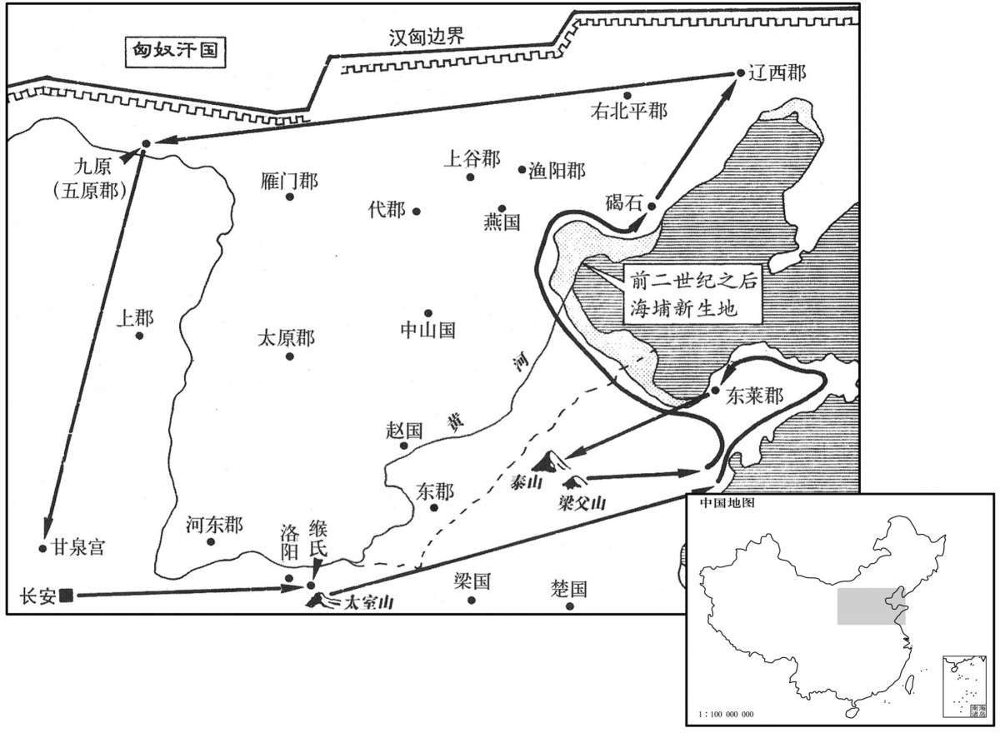
先是，桑弘羊为治粟都尉，领大农〔原父曰：大司农，旧治粟内史耳，弘羊为搜粟都尉也。先，悉荐翻。〕尽管天下盐铁。弘羊作平准之法，令远方各以其物如异时商贾所转贩者〔贾，音古。〕为赋而相灌输。置平准于京师，都受天下委输。〔委，于伪翻。输，音戍。〕大农诸官，尽笼天下之货物，贵即卖之，贱则买之，欲使富商大贾无所牟大利，〔如淳曰：牟，取也。〕而万物不得腾踊。至是，天子巡狩郡县，所过赏赐，用帛百余万匹，钱金以巨万计，皆取足大农。弘羊又请〔【章：十四行本“请”下有“令”字；乙十一行本同；孔本同。】〕吏得入粟补官及罪人赎罪。山东漕粟益岁六百万石，一岁之中，太仓、甘泉仓满，边余谷，诸物均输，帛五百万匹，民不益赋而天下用饶。于是弘羊赐爵左庶长，黄金再百斤焉。
当初，桑弘羊以治粟都尉的身分兼任大农令，主持全国的盐铁专营事务。桑弘羊创立平准法，令相距较远的地方官府以各自的特产作为贡赋，参考商人在不同时期向不同地区转贩不同商品的作法，相互转输。又在京师设立平准官，负责全国各地的转输事务，大农令所属各官，控制天下全部货物，价高时卖出，价低时买进，目的是让大商人无法牟取暴利，使各种货物的价格不能高涨。如今，汉武帝出巡各地，所到之处，赏赐丝织品共一百多万匹，金钱以万万计，都由大农令充分供应。桑弘羊又奏请以武帝批准，小吏可以用捐献粮食的办法升为官员，犯罪的人也可以用此法来赎罪。因此，崤山以东地区一年的漕粮比规定数目多出六百万石，一年之间，太仓、甘泉仓全部贮满，边塞地崐区的粮食储备也有盈余；各地货物相互流通，都有余裕，如丝织品就余出五百万匹。百姓赋税没有增加，而天下财物却变得富饶有余。于是，汉武帝赐给桑弘羊左庶长爵位和黄金二百斤。
是时小旱，上令官求雨。卜式言曰：“县官当食租衣税而已，〔师古曰：衣，于既翻。〕今弘羊令吏坐市列肆，贩物求利，烹弘羊，天乃雨。”
这时，发生小规模的旱灾，汉武帝命官员求雨。卜式说道：“朝廷的衣食供应全靠赋税，如今桑弘羊却让官吏们坐在市场店铺之中，贩卖货物，追求利润。只有烹杀桑弘羊，天才会下雨。”
秋，有星孛于东井，〔晋天文志：东井八星，天之南门，黄道所经。又曰：东井，雍州分。孛，蒲内翻；下同。〕后十余日，有星孛于三台。〔天文志：魁下六星，两两而比，曰三台。〕望气王朔言：“候独见填星出如瓜，食顷，复入。”〔填星，土星也。填，读曰镇。〕有司皆曰：“陛下建汉家封禅，天其报德星云。”〔师古曰：德星，即填星也。言天以德星报于帝。〕
秋季，有异星出现在井宿。十几天后，三台星旁又出现异星。善观星象的王朔说道：“观测时只看到土星独自出现，形状似瓜，一顿饭工夫后消失。”有关官员都说：“陛下开创汉朝天子封禅记录，上天用‘德星’回报陛下。”
齐怀王闳薨，无子，国除。〔闳，元狩六年受封。〕
齐王刘闳去世，因没有儿子，封国被撤销。
版本与范围
原文：司马光主编《资治通鉴》，胡三省注本。胡注与校勘以原书括注保留；史家评论按原书标识。
白话所据资料文件署名为本站所据白话资料。沿用来源文件的版本标识，未另作版本鉴定；未以生成译文补齐。
追叙、评论与原书衔接不改列到推测年份。同年跨卷的记事分别保留。阅读器仍提供模式、注释、字号、搜索及返回浏览位置等工具。